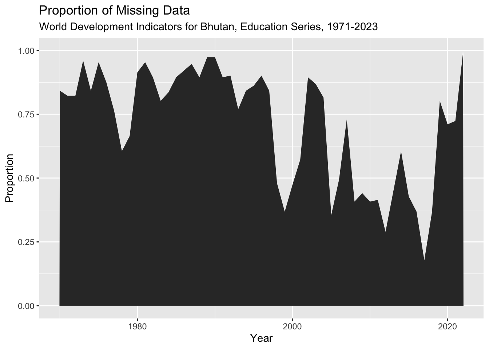
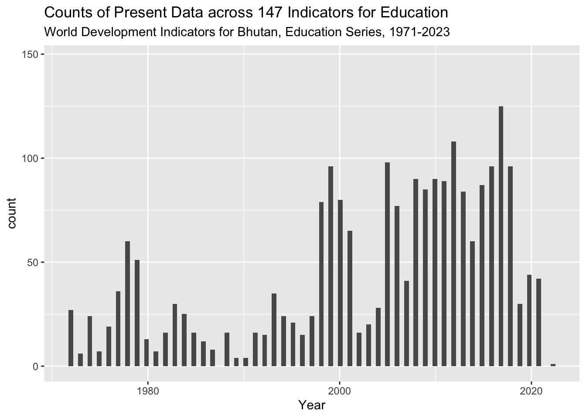
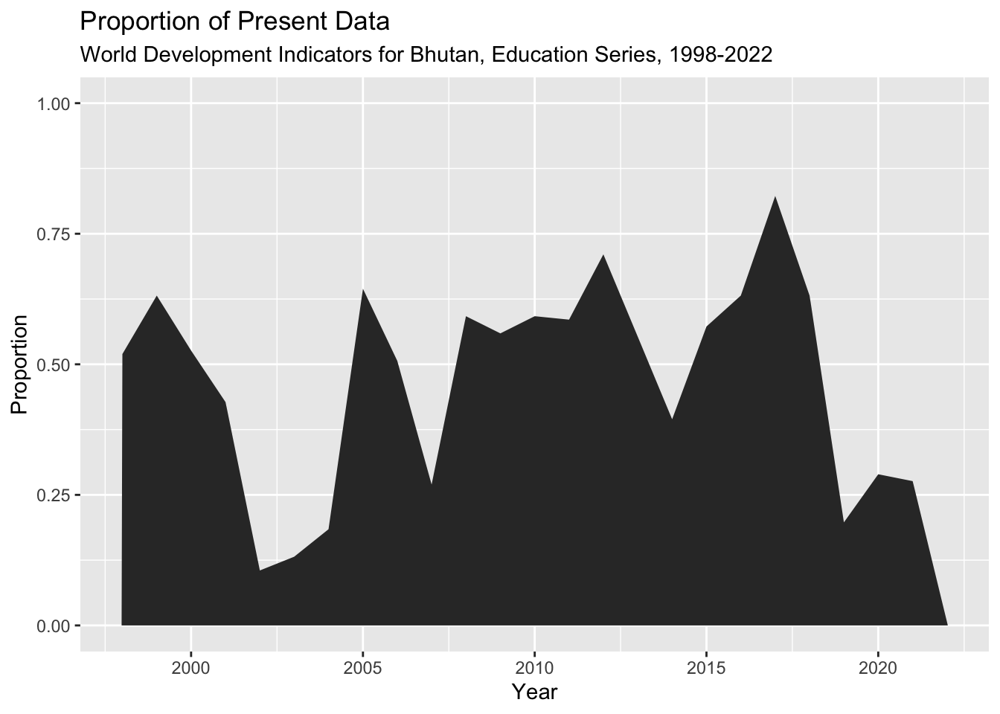
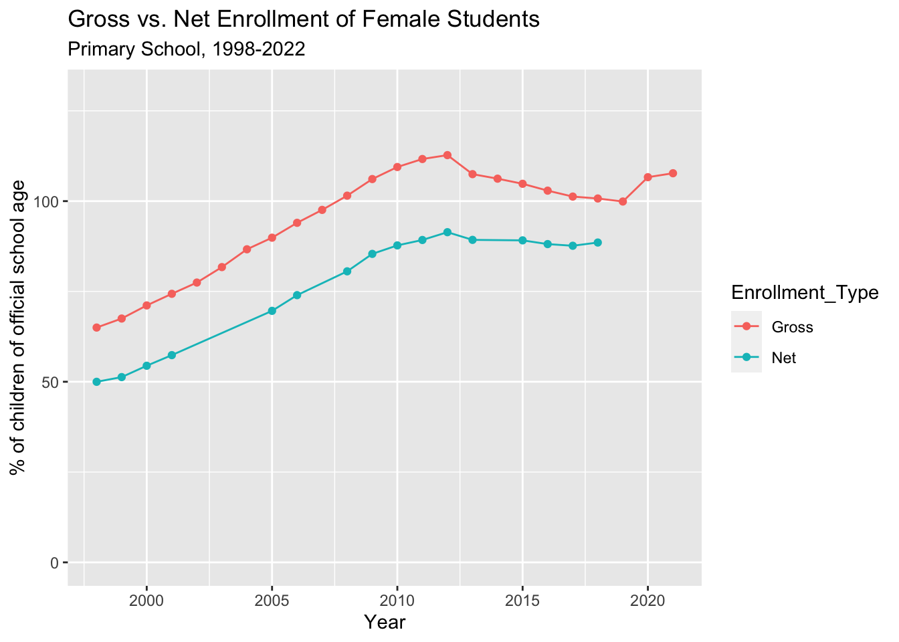
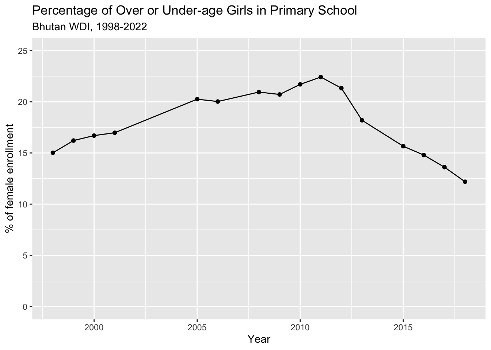
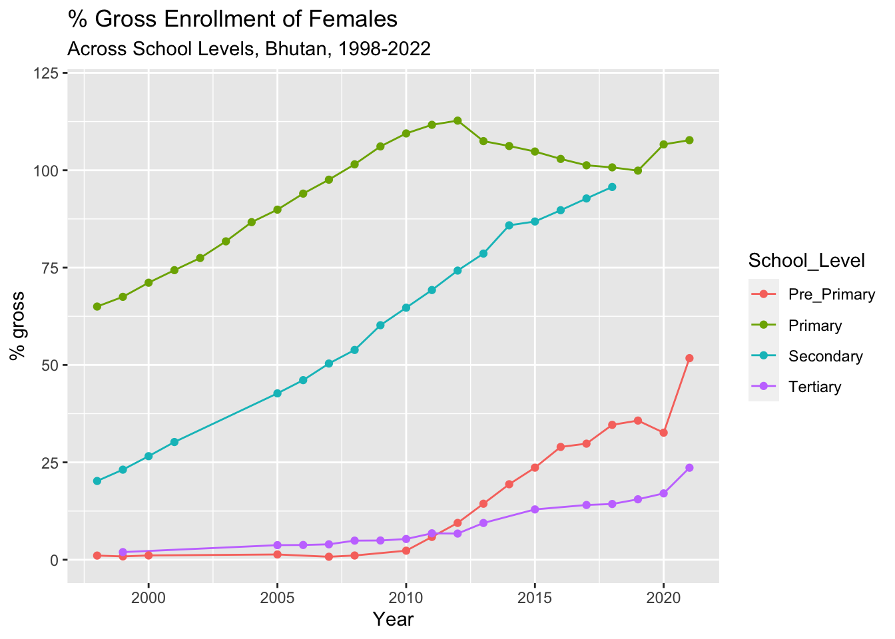
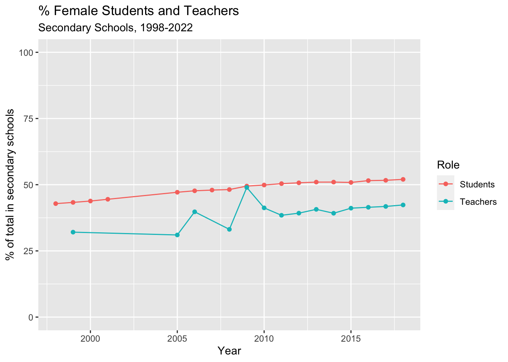
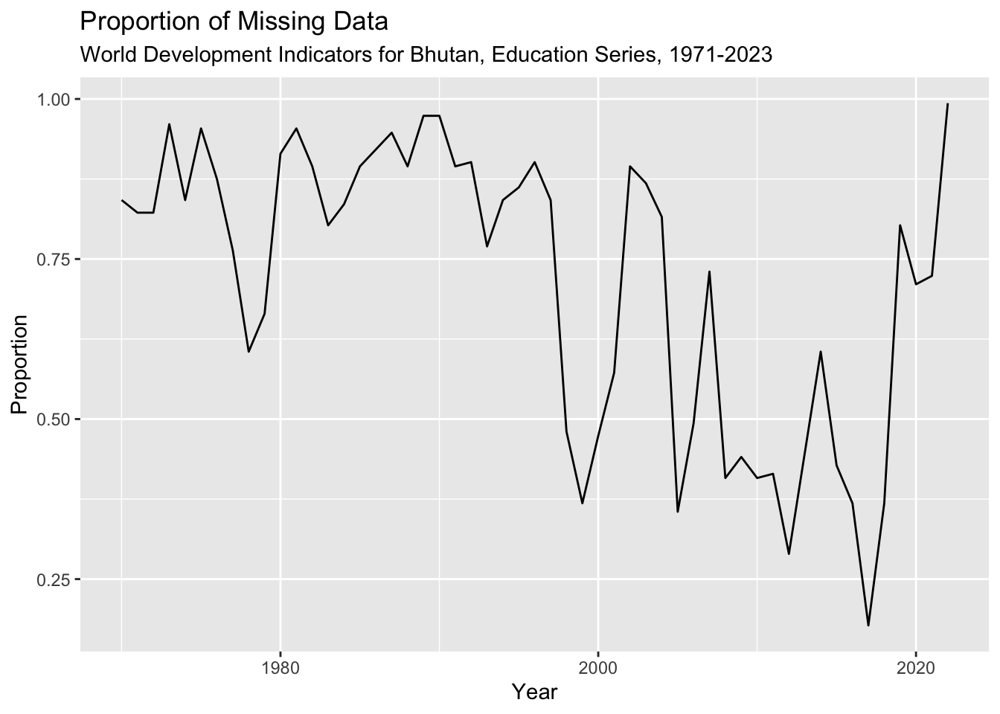
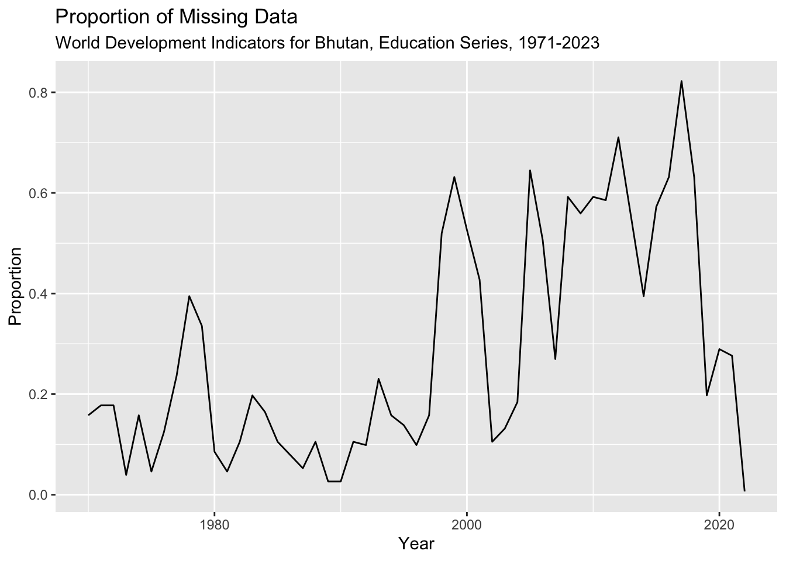
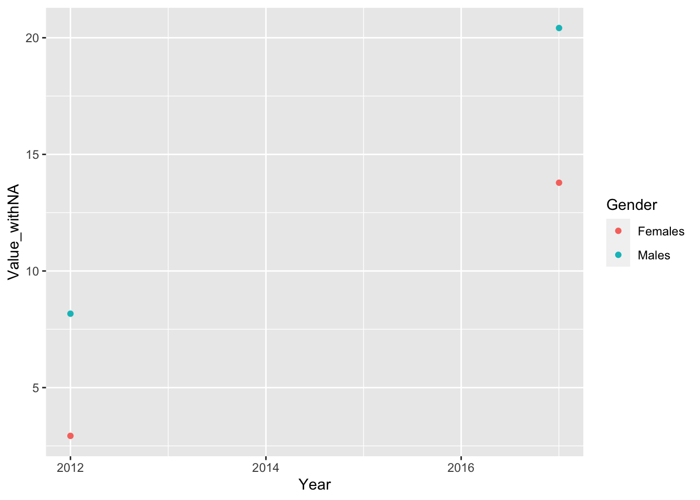

── Attaching core tidyverse packages ──────────────────────── tidyverse 2.0.0 ──
✔ dplyr 1.1.2 ✔ readr 2.1.4
✔ forcats 1.0.0 ✔ stringr 1.5.0
✔ ggplot2 3.4.2 ✔ tibble 3.2.1
✔ lubridate 1.9.2 ✔ tidyr 1.3.0
✔ purrr 1.0.1
── Conflicts ────────────────────────────────────────── tidyverse_conflicts() ──
✖ dplyr::filter() masks stats::filter()
✖ dplyr::lag() masks stats::lag()
ℹ Use the conflicted package (<http://conflicted.r-lib.org/>) to force all conflicts to become errors
library(readxl)library(lubridate)library(dplyr)
Introduction
Using data compiled by the World Bank over the last half-century, this report explores trends in female participation in the Bhutanese education system, and reveals some dimensions of change in girls’ enrollment in Bhutanese schools over most recent 25 years of available data. After taking an overview of data recorded on education since 1971, this report focuses on the period of 1998 to 2022, which spans major societal transitions after the whole-scale introduction of internet, television, and cellular technology between 1999 and 2003, and Bhutan’s political transition from absolute monarchy to parliamentary democracy in 2008. Throughout the report, and especially as visualizations appear to confirm the common perception that Bhutan has achieved educational equity, I contextualizes patterns in female enrollment, persistence, and attainment within observations from my personal experience in Bhutan, as well as known political and civic developments in the Kingdom. In the discussion, I suggest directions for further research in the hopes that insights will eventually inform gender-sensitive institutional policies and practices.
Rationale
Bhutan is praised for its relative gender equity in society with respect to its country neighbors in Asia, but inequities persist and there seems to be some denial amongst the national and school leadership about the persistence and extent of gender inequity in schools. When I was working on the development of the Bhutan Baccalaureate for the Royal Secretariat, I experienced resistance to my suggestions that institutional policies must be sensitive to gender differences, and more data must be collected on the experiences of girls and women within schools. Furthermore, I was concerned that girls’ and women’s enrollment seemed low or inconsistent, and this was explained as a consequence of demands for household, family, or agricultural labor. Since the establishment of Bhutan’s first democratic government in 2008, some national policies have highlighted the need for improving inclusion and outcomes for female youth, by and large these stated values and priorities have not been translated into programs and practices within schools.
World Development Indicators
The Development Data Group at the World Bank collects, compiles, and disseminates statistical and data work and maintains macro, financial and sector databases for countries and regions worldwide. According to the World Bank Open Data website, the majority of data comes from the statistical systems of member countries; therefore, while the Development Data Group upholds professional standards for quality and integrity, the quality of these data ultimately depend on the practices of the member countries. To support the larger goal of generating and making available good-quality statistical data on all aspects of development, the Development Data group coordinates with the Bank’s Global Practices and regional groups to “help developing countries improve the capacity, efficiency, and effectiveness of national statistical systems.” (https://data.worldbank.org/about) Not only do timely and reliable statistics support the critical management decisions of the countries themselves, they inform the World Bank’s broad development strategy.
More information about the World Bank’s databases and global statistical strategy can be found here.
The World Development Indicators (WDI) is a centralized compilation of development indicators from international sources that are officially recognized by the World Bank. WDI presents the most accurate global development data that is currently available, and its database includes national, regional, and global estimates. The data used in this report are all sourced from the WDI collection on the Kingdom of Bhutan, which is organized by series (Economic Policy & Debt, Education, Environment, Financial Sector, Gender, Health, Infrastructure, Poverty, Private Sector & Trade, Public Sector, Social Protection & Labor, and Social: health) which each have many sub-categories. Each indicator (for example, “Adjusted net enrollment rate, primary, female (% of primary school age children)”) is published with a definition, source, (eg. UNESCO Institute for Statistics. Data as of February 2020.), and details such as periodicity and aggregation method.
For each indicator’s specific dataset, the Development Data group has published short descriptions of the statistical concept and methodology, development relevance, and limitations and exceptions to the indicator. This documentation is crucial for interpretation of Bhutan’s data, as the Kingdom’s processes and standards for data collection and its participation in international surveys and data-sharing have all changed dramatically since 1960, when the WDI was established. Indeed, the first data from Bhutan for any indicator appears in 1970. This corresponds with the establishment of a statistical cell within Bhutan’s Ministry of Development in 1971, the same year that Bhutan became a member of the United Nations. These events marked a major shift in Bhutan’s development paradigm, away from isolationist policies toward the development of international relations and diplomacy. It also marked the beginning of rapid modernization of the whole nation, including development of secular education. This development - among other other social, political, economic and environmental changes - has brought profound societal transformation.
Development Indicators for Bhutan: Education and Gender
The complete tabular dataset of nearly 1500 time series WDI for Bhutan is available for download on the World Bank’s Data Development country page for Bhutan. The country page presents some basic plots showing trends for particular indicators over time. The World Bank databank allows users to query and download a tabular dataframe of specific indicators for a set of dates. This report thereby pulls one series of World Development Indicators for Bhutan, “Education”, across the years 1970-2022, into a single dataframe.
#read in dataBhutanWDI<-read_csv("_data/Bhutan_WDI_Edu.csv")%>%select(-c("Country Name", "Country Code", "Series Name"))
Rows: 152 Columns: 57
── Column specification ────────────────────────────────────────────────────────
Delimiter: ","
chr (57): Country Name, Country Code, Series Name, Series Code, 1970 [YR1970...
ℹ Use `spec()` to retrieve the full column specification for this data.
ℹ Specify the column types or set `show_col_types = FALSE` to quiet this message.
BhutanWDI
In the resulting dataframe, columns represent the years between 1970 and 2022, with each row being an indicator represented by a code. Each value in the dataframe is a unique observation of an indicator in a particular year. All values are currently stored as characters, all of which will need to be changed to numeric for analysis. Depending on the indicator, the numeric values will be discrete or continuous data. Most values represent percentages of a population or expenditure, ratios (eg. pupil-teacher ratio), points on a scale (eg. scale 1-100 on the Women Business and the Law Index Score, or the Gender Parity Index), or years (eg. of compulsory education).
The metadata for each indicator (the name and description for each code) can be seen in a corresponding Metadata dataframe.
# read in metadataWDImetadata<-read_csv("_data/Bhutan_WDI_Edu_Metadata.csv",skip =153)
Rows: 147 Columns: 12
── Column specification ────────────────────────────────────────────────────────
Delimiter: ","
chr (12): Code, License Type, Indicator Name, Long definition, Source, Topic...
ℹ Use `spec()` to retrieve the full column specification for this data.
ℹ Specify the column types or set `show_col_types = FALSE` to quiet this message.
WDImetadata
The Education indicators can be classed into the following “sub-series”: Efficiency, Inputs, Outcomes, and Participation. Here is a sample group of indicators in the Participation series, all relating to school enrollment:
School enrollment can be understood as an indicator group, wherein school enrollment is observed for each unique combination of the following variables: 3 levels of schooling, genders, and by % of gross or net enrollment. It also includes a gender parity index for each level of schooling, which is calculated by dividing the female rate by the male rate. One can see each combination of variables within this group represented in the corresponding code for each indicator.
Other indicator groups in the Participation series include: - number of pupils (across primary and secondary school, and genders); - children/adolescents out of school (across primary and secondary school, and genders); - adjusted net enrollment rate for primary school (across genders).
In the Outcomes series, indicator groups include: - duration education in years (for pre-primary, primary, secondary, and total compulsory education) - educational attainment of adults >25 (cumulative completion of each level of education, total and across genders) - completion rate (for primary and lower secondary school, total and across genders) - literacy rate (for youth and adult, total and across genders)
In the Inputs series, indicator groups include: - number of teachers (primary, secondary, and tertiary levels, total and across genders) - % trained teachers (pre-primary, primary, lower secondary, secondary, and upper secondary levels, total and across genders)
In the Efficiency series, indicator groups include: - gross and net intake ratios in grade 1 (total and across genders) - over-age students in primary school (total and across genders) - persistence to grade 5 (total and across genders) - progression to secondary school (total and across genders) - repeaters (total and across genders)
To make the dataframe more readable, I will simplify the “Series Code” name and values, and create categorical variables for three variables which are common across the large majority of indicators: Unit (of measurement or analysis), Gender (male, female, or total combined), and School Level (pre-primary, . When an indicator does not definitionally include a variable (eg. the percentage government expenditure on primary education is not calculated by gender), the value for this variable will indicate this categorically.
#rename "Series Code" as "Indicator" and remove non-unique code ("SE.")BhutanWDI_Indicator<-BhutanWDI%>%rename(Series_Code ="Series Code")%>%mutate(Indicator =str_sub(Series_Code, 4, -1))%>%select(-"Series_Code")#group data with categorical data to describe the unit of analysis, gender in question, and level of schooling in question BhutanWDI_grouped<-BhutanWDI_Indicator%>%mutate(Unit =case_when(grepl("TENR",Indicator) ~"adjusted_net_enrollment_rate",grepl("UNER",Indicator) ~"%_out_of_school",grepl("DURS",Indicator) ~"duration_in_years",grepl("XPD",Indicator) ~"%_of_government_expenditure",grepl("CUAT",Indicator) ~"%_educational_attainment",grepl("GINT",Indicator) ~"gross_intake_ratio",grepl("LITR",Indicator) ~"adult_literacy_rate",grepl("LT",Indicator) ~"youth_literacy_rate",grepl("CMPT",Indicator) ~"completion_rate",grepl("AGES",Indicator) ~"starting_age",grepl("NINT",Indicator) ~"net_intake_ratio",grepl("OENR",Indicator) ~"over_age_students",grepl("PRS",Indicator) ~"%_persistence",grepl("ENRL",Indicator) ~"%_of_pupils",grepl("TCHR",Indicator) ~"%_of_teachers",grepl("PROG",Indicator) ~"%_progression",grepl("REPT",Indicator) ~"%_repeaters",grepl("ENRR",Indicator) ~"enrollment_%_gross",grepl("NENR",Indicator) ~"enrollment_%_gross",grepl("ENR.",Indicator) ~"gender_parity_index",grepl("PRIV",Indicator) ~"%_private_school",grepl("TCAQ",Indicator) ~"%_trained_teachers" ))%>%mutate(Gender =case_when(grepl("FE",Indicator) ~"Females",grepl("MA",Indicator) ~"Males",TRUE~"Total" ))%>%mutate(School_Level =case_when(grepl("PRE",Indicator) ~"Pre_Primary",grepl("PRM",Indicator) ~"Primary",grepl("SEC",Indicator) ~"Secondary",grepl("TER",Indicator) ~"Tertiary",TRUE~"Other" ))%>%#move the categorical variables to the left for readabilityselect(Indicator, Unit, Gender, School_Level, everything())BhutanWDI_grouped
The new dataframe now presents key categorical data for understanding the nature of the indicator. It is now possible to group by “Unit” in order to analyze values of the same type.
Years of observation still exist in a wide format, with each year being a variable, which is not convenient for analysis. Further in this report, in preparation for analysis, I will pivot the data longer so that “Year” becomes a single variable and each row becomes a single observation of each indicator, each year. I will also convert the years to a date format, so that it is read as continuous data.
By inspecting the above dataframe, “BhutanWDI_grouped”, we can see that for any given year with data, the WDI series of indicators for education can be used for a multitude of purposes. The indicators themselves are already summaries; the raw data are not made publically available. Sets of indicators can be used to compare male and female enrollment, persistence, and completion of different levels of schooling, and track when students deviate from the standard educational progression for their age group - i.e. when they enter school late, repeat grades, or drop out. Other indicators also allow us to compare adults’ educational attainment and literacy at different age classes. Furthermore, some indicators can be used to compare the gender ratios of teachers, and their respective levels of training, in each level of schooling - allowing us to see any relationships between changing gender rations among teachers and student trends.
It is important to remember that these indicators reflect the interests of the World Bank and its associates, not the interests of Bhutan. Furthermore, the WDI are standard across all nations worldwide, and are not contextualized to Bhutan. Therefore, the indicators may not capture nuance that reveals the unique conditions and patterning in Bhutan. The World Bank relies on Bhutan to provide source statistical data for these indicators, and while it does provide support for national statistical data collection infrastructure (and, insodoing, supports the regulation of data quality), it can not require that Bhutan provide statistical data.
With these considerations in mind, get a sense of the interests of the World Bank’s Development Data Group by counting the number of indicators that share the same unit (and are therefore aimed at a similar type of statistic).
#count the individual indicators that have the same Unitstats_BhutanWDI<-BhutanWDI_grouped%>%count(Unit)%>%arrange(desc(n))stats_BhutanWDI
The top five types of indicators (as indicated by their unit) look at educational attainment, gross enrollment, percentage of trained teachers in the teaching workforce, types of students, and percentage of government expenditure on education. This implies a narrowly economic understanding of educational “development”, as it focuses on quantifiable characteristics of institutions and their membership. These indicators fall very short of describing the conditions within schools and the qualities of the educational experience. They are also generalized to the national scale, and do not account for the tremendous regional and local diversity within Bhutan; in actuality, schools vary significantly in terms of material resources and infrastructure, teacher training, student to teacher ratios, distance from / proximity to students’ homes, etc. The urban-rural asymmetries have increased dramatically over the past 30 years, increasing inequities across local school systems, and making more recent national statistics less representative of individual cases.
As we run analyses on the available data and hypothesize about the conditions and support for females in the Bhutanese education system, these limitations of the data should remain forefront in our minds. Qualitative research is required to lend context to these indicators and yield meaningful insights that might lead to sound recommendations for improvement.
Focus of exploration
This exploration of the World Bank’s Global Development Indicators related to education in Bhutan seeks to illuminate patterns in female participation as students in the education system, and generate research questions and that may guide future research. Insights from continuous diagnosis and learning should inform gender-sensitive institutional policies. I will focus on the past 25 years of recorded data (1998-2022), and aim to show issues in educational coverage and efficacy as well as notable covariances, including: – overage enrollment in primary school – drop off in high school enrollment – possible correlation in female persistence with increase in female teachers
These data can give us a view on girls’ and women’s access to and persistence in education - their bare participation - but the data can not give insight into the dynamics of inclusion within schools, nor the external conditions (eg. personal, familial, cultural, social, economic) which interfere with girls’ or women’s access to education. I will draw upon my personal experience working in Bhutan to develop a new model for education (2018-2021), in order to contextualize the observed trends and suggest directions of further investigation.
Throughout this report, I will highlight the perceptible lacks and weaknesses in data, and emphasize the need for more extensive research on the situation of female Bhutanese to better diagnose sources of educational discrimination and exclusion. Without continuous collection of high quality data, it will be impossible to detect and understand problems, design interventions, and know when they are successful.
Tidying the data for the desired analyses
To tidy the dataframe for analyses, each row should be a unique combination of indicator and year along with descriptive categorical data, and each year should be read as a date.
#For all the Year columns, subtract all characters from the column name string, except characters 1-4colnames(BhutanWDI_grouped)[5:57] <-substr(colnames(BhutanWDI_grouped)[5:57], 1, 4)#For all the Year columns, add the characters 0101 to the column name string, with no separation. This will allow the function ymd to read these strings as dates (after we pivot_longer into a column)colnames(BhutanWDI_grouped)[5:57] <-paste(colnames(BhutanWDI_grouped)[5:57],"0101", sep="")#Pivot the year columns into a single "Year" columnBhutanWDI_long<-BhutanWDI_grouped%>%pivot_longer(cols=5:57, names_to="Year", values_to="Value")#Convert the "Year" column into a date format for easier plotting BhutanWDI_long$Year <-ymd(BhutanWDI_long$Year)BhutanWDI_long
Now we have a dataframe wherein each row is a unique observation of indicator and year, with associated categorical data.
The values for each observation (under the column “Value”) need additional tidying: missing data should be re-coded as “NA”, and present values need to be converted from character to numeric data.
#re-code missing data in Value as NA in new column "Value_withNA" and remove "Value"BhutanWDI_long<-BhutanWDI_long%>%mutate(Value_withNA =na_if(Value, ".."))%>%select(-Value)#Change the "Value_withNA" column from character to numeric: BhutanWDI_long$Value_withNA <-as.numeric(BhutanWDI_long$Value_withNA)BhutanWDI_long
In the “BhutanWDI_long” dataframe, each unique value is now on its own row, but the values still represent different types of information - some are ratios, many are percentages of a designated population, some are year counts, and so on. To see how a variable or variables (such as net female and male enrollment in primary school) have changed over time, we will need to make a new dataframe or tibble with relevant indicators with the same type of value, which can be achieved by filtering rows of a certain Unit.
##When were data recorded, and how much data was recorded each year?
For the reasons mentioned in the “World Development Indicators” section above, WDI data for Bhutan are non-existent until 1971. Over the subsequent 54 year span of records, available data has gradually increased but remained patchy for most indicators. Because the coordination, effort, and resources required for Bhutan’s national surveys are great, I expect data collection be periodic (as national surveys are tremendous effort and expense), and significant gaps in data may align with overhauls and restructuring of educational administration and government infrastructure for statistical data collection. Overall, I expect data collection to increase in amount and frequency over time.
The following plots will inform the selection of a time period for analyses focused on particular themes such as enrollment, attainment, and gender ratios. I aim to select a 20-25 year window which is likely to have enough data across indicators to run a set of calculations. For any chosen period, there will still be missing data across some indicators; before running calculations I will check the respective indicators for the presence of data across most years.
#create a new column categorically labeling values as missing or presentBhutanWDI_long<-BhutanWDI_long%>%mutate(Missing =case_when(is.na(Value_withNA) ~"missing",TRUE~"present" ))#create a new dataframe with a column for proportion of indicators that are missing data in each yearBhutanWDI_long_prop<-BhutanWDI_long%>%group_by(Year, Missing)%>%#n=n() means that a variable named n will be assigned the number of rows (i.e. number of observations) in the summarized datasummarise(n=n())%>%group_by(Year)%>%#create a column with the proportion of indicators with missing data in a given yearmutate(Proportion = n/sum(n))%>%ungroup()
`summarise()` has grouped output by 'Year'. You can override using the
`.groups` argument.
BhutanWDI_long_prop
The resulting dataframe contains an observation of missing and an observation of present data for each year, creating two rows for each year. For each observation, the count of missing or present data and its proportion of the total number of indicators are listed as variables “n” and “Proportion”. Using this dataframe, I will plot the proportion of missing data each year.
BhutanWDI_long_prop%>%filter(Missing =="missing")%>%ggplot(aes(Year, Proportion))+geom_area()+labs(title ="Proportion of Missing Data", subtitle ="World Development Indicators for Bhutan, Education Series, 1971-2023")+scale_y_continuous(lim=c(0,1))

In the plot above, the proportion of missing data are presented in the darkened area. Conversely, the negative space in the plot represents the proportion of present data. Until the late 1990s, most indicators do not have data. In two years of the late 1970s, data were recorded for approximately one third of the WDI. In one year of the early-mid 1980s, data were recorded for about one fifth of indicators. Not until the late 1990s do we see a year when over half of indicators have data. After that point, data are recorded more consistantly, but there seem to be significant gaps in the early 2000s, mid-2010s, and as we approach the present. There are zero data collected for 2003.
This information can be presented with a histogram showing distribution of present values since 1971.
BhutanWDI_long%>%drop_na(Value_withNA)%>%filter(Year>"1971-01-01")%>%select("Year","Value_withNA")%>%ggplot(aes(Year))+geom_histogram(binwidth =180)+labs(title ="Counts of Present Data across 147 Indicators for Education", subtitle ="World Development Indicators for Bhutan, Education Series, 1971-2023")+scale_y_continuous(lim=c(0,147))

Based on these plots, I will focus my analyses on the 25 years between 1998 and 2002 (inclusive). To summarize the central tendencies of the proportions of present data, I will calculate the mean and median values. In this case, the data are skewed (or asymmetrical), so the mean will be distorted by outliers. The median will provide a better indication of the central tendency.
The mean tells us that the average proportion of present data is less than half during this period, but the median tells us that the majority of years have data for the majority of indicators.
Here is a snapshot of the proportion of present data for this period:
BhutanWDI_long_prop%>%filter(Missing =="present")%>%filter(Year>"1997-01-01")%>%ggplot(aes(Year, Proportion))+geom_area()+labs(title ="Proportion of Present Data", subtitle ="World Development Indicators for Bhutan, Education Series, 1998-2022")+scale_y_continuous(lim=c(0,1))

This close-up shows a lapse in recorded data for most indicators from 2002 to 2004, and other significant gaps in reported data for 2007, 2014, and from 2019 onwards.
Based on my knowledge of Bhutan’s recent civic and political history, these lapses correspond with national crises and significant changes in Bhutan’s governance and administration. In 2002 and 2003, the Bhutanese government confronted armed groups of guerrilla rebels who set up bases in southern Bhutan. These groups were seeking to create an independent Assamese state, and were launching attacks across Bhutan’s border with India. By the end of 2003, Bhutan had failed to negotiate with the rebel groups and, in coordination with the Indian Army, forcibly returned them to India. This major national operation would have disrupted many regular operations, and may have disrupted statistical data collection.
In 2007 the country was in the midst of its transition from absolute monarchy to parlaimentary democracy with a constitutional monarchy, and in the fall of 2007 it was conducting its first-ever democratic elections. This transition entailed a massive restructuring of the civil service, including the National Statistics Bureau.
I am not sure what may have caused the lapse in 2014; this year was the first of Bhutan’s second elected government under Prime Minister Tshering Tobgay, and was a year of many legislative reforms enacted under the guidance of Bhutan’s 11th Five-Year Plan (20013-2018). Bhutan’s Five-Year Plans map out plans for national economic development; this Five-Year Plan responded specifically to acute concerns about rising youth unemployment and a shortage of skilled workforce by recommending changes to the education system.
With awareness of these gaps in recorded data, I will focus my analyses on the 25 years between 1998 and 2002 (inclusive).
For alternative plots of data distribution across Bhutan’s WDI for Education, 1970-2003, see Appendix A.
How do the percentages of girls and boys ages 6-11 enrolled in school compare across 1998-2022?
To get an initial sense of how girls’ and boys’ access to school has compared since 1998, I have plotted the adjusted net enrollment rate of boys and girls who are of primary school age.
According to the World Bank Development Data Group (as documented in the metadata for the respective indicators), the adjusted net enrollment is the number of pupils of the school-age group for primary education, enrolled either in primary or secondary education, expressed as a percentage of the total population in that age group. In other words, these values represent the percentage of children of primary school age who are in school - irrespective of their grade. They may be ahead or behind their age group, but as long as they are enrolled in school they are included in this percentage.
There are several different type of calculations of enrollment captured by WDIs, all expressed as a percentage of the total given population. The net enrollment rate is the ratio of children of official school age who are enrolled in school to the population of the corresponding official school age. In contrast to the adjusted net enrollment rate, this percentage excludes children of primary school age who are enrolled in other levels of school (eg. pre-primary or secondary). The gross enrollment ratio is the ratio of total enrollment, regardless of age, to the population of the age group that officially corresponds to the level of education shown. In other words, this percentage includes children who are underage or overage but enrolled in the given level of school. In theory, therefore, this percentage could surpass 100. I will discuss net and gross enrollment statistics in following sections of this report.
In Bhutan, the official age for entry into primary school is 6, and primary schooling lasts 7 years, so the children represented by the adjusted net enrollment indicators are aged 6 to 11 years. Globally, this is particularly long duration for primary schooling. In general, a longer duration for primary education tends to decrease the enrollment rate, in part because older children are more at risk of dropping out.
According to the WDI documentation, enrollment indicators are based on annual school surveys that are implemented by Bhutanese authorities, but do not necessarily reflect actual attendance or dropout rates during the year. Moreover, age at enrollment may be inaccurately estimated or misstated, especially in communities where registration of births is not strictly enforced. This may well be the case across communities in Bhutan, affecting the accuracy of enrollment values. In Bhutan, by tradition, birthdays are not remembered or celebrated, and many Bhutanese do not know their own birthdays (although youth are increasingly valuing and celebrating their own birthdays). Birth dates were not officially documented until a citizenship act in 1958 required Bhutanese to report their year of birth. Administratively, all Bhutanese turn a year older on January 1st.
Adjusted net enrollment rates for primary school children were measured in 1978, 1979, and then again in 1998 and continue to be recorded annually except 2002-2004, 2007, and from 2019 to present. To see the plots and tibbles for these calculations, see Appendix B: Locating male and female adjusted net enrollment data, 1998-2002.
In order to plot the adjusted net enrollment rate for male and female primary school age students from 1998 through 2022, I have prepared a new dataframe.
#create new dataframe for primary net enrollment rate for male and female onlyPriNER<-BhutanWDI_long%>%filter(Year>="1998-01-01")%>%filter(str_detect(Indicator, "TENR"))%>%#this step is redundant, but included just to see all indicators related to net enrollment ratesfilter(str_detect(Indicator, "PRM.TENR.FE|PRM.TENR.MA"))%>%select(-Missing)PriNER
In the dataframe, as noted above, data are missing for the years 2002, 2003, 2004, 2007, 2014, 2019 and onwards. As I plot the data as points, I will apply a smoothing line to highlight the trend, but the gaps between points remain noticeable.
PriNER%>%ggplot(aes(x=Year, y=Value_withNA, group=Gender, color=Gender))+geom_point()+labs(title="Adjusted Net Enrollment of Primary School Age Children", subtitle="Bhutan WDI, 1998-2022", y="% of eligible population")+geom_smooth(se=FALSE)+scale_y_continuous(lim=c(0,100))
`geom_smooth()` using method = 'loess' and formula = 'y ~ x'
The plot indicates that about 50% of girls aged 6-11 years were enrolled in school in 1998, and boys of the same age were enrolled at about 10 points higher. This gap, however, closes in the subsequent 7 years, and in 2005 about 70% of both girls and boys are enrolled in school. Girls then surpass boys, peaking at about 93% enrollment in 2012, and boys peak in the same year at about 90% enrollment.
These descriptive statistics are shown in the following tibble:
In terms of central tendency, the mean for both girls and boys is 78.5%, whereas the median is nearly 10 points higher for girls and nearly 7 points higher for boys. In terms of spread, the range for girls is a full 10 points greater than for boys, and correspondingly, the standard deviation is greater as well (16.2 for girls, 12.6 for boys).
Overall, this plot shows us a tremendous positive change in enrollment of Bhutanese youth in the 25 years between 1998 and 2022. While enrollment never reaches 100%, enrollment remains above 90% after 2011 for girls and above 88.7% for boys over the same years. Girls’ enrollment showed remarkably strong improvement, increasing a net 40% over the 25 years, surpassing boys in 2005 (before re-converging with the boys’ rate of enrollment around 2018).
This is a strong indication of young girls’ participation in school, and likely reflects deep national investment in primary school infrastructure combined with dogged national campaigns for youth enrollment, which influences parents’ willingness to enroll their children in school at the cost of their helpful labor on family farms.
In my experience in Bhutan, there was strong general belief in the potential for schooling to improve lives and provide pathways toward non-agricultural livelihoods, especially toward coveted positions in the civil service. After the sudden introduction of internet, television, and cell phone technology to the Bhutanese public between 1999 and 2003, and as Bhutan welcomed more visitors from abroad, collective imagination and expectations for personal education, work, and life potential has changed dramatically. It is my impression that education is generally understood in Bhutan as the key to greater possibility, and farming families are increasingly willing to accept the cost of sending their children to school.
These enrollment figures, however, do not fully capture a picture of enrollment in Bhutanese primary schools: it omits over-age students. I suspect that, as more Bhutanese families perceived the value of school, and with pressure from higher Bhutanese authorities, older children who had not enrolled in primary school at the appropriate age may start their schooling at a later age.
What percentage of girls in primary school are over-age, and how does this change across 1998-2022?
As mentioned above, the net enrollment rate is the ratio of children of official school age who are enrolled in school to the population of the corresponding official school age; the gross enrollment ratio is the ratio of total enrollment, regardless of age, to the population of the age group that officially corresponds to the level of education shown. The difference between these two values (measured as a percentage of the total given population) represents the percentage of over-age and under-age students enrolled in the given level of school. In my experience in Bhutan, primary schools contain far more over-age students than under-age students, because of grade repetition or late entry for a variety of social, logistical, and economic, and cultural reasons. According to the metadata for gross enrollment ratio indicators, these data indicate the capacity of each level of the education system. The net enrollment rate, which excludes overage and underage students, is understood as a more accurate measure of the system’s coverage and internal efficiency.
Assuming that there are far more over-age than under-age students in Bhutanese primary schools, I will plot the difference between net and gross enrollment to get a sense of how the incidence of over-age enrollment of girls changed over the years 1998-2022.
#create new dataframe for gross and net enrollment rate of females in primary schoolFe_enr_gross_net<-BhutanWDI_long%>%filter(Year>="1998-01-01")%>%filter(str_detect(Indicator, "PRM.ENRR.FE|PRM.NENR.FE"))%>%#make these values more readable -- we could also have used "recode" mutate(Indicator =case_when( Indicator =="PRM.ENRR.FE"~"Gross", Indicator =="PRM.NENR.FE"~"Net" ))%>%rename("Enrollment_Type"="Indicator")%>%select(-Missing)Fe_enr_gross_net
Interestingly, the prepared tibble shows more years of reported data on gross enrollment than of net enrollment. Data on net enrollment was missing in the early 2000s (also visible as the lack of points plotted below), and stop being reported in 2018, whereas data on gross enrollment continue through 2021. This seems reasonable when considering convenience of school reporting; it is easier to collect basic enrollment data than calculate just those that are of the proper age. This would be even more challenging if there is confusion or lack of information about birth dates. It may therefore simply be easier to collect gross enrollment data, rather than separate out the students who are over- or under-age.
For the years with both values, their difference becomes obvious in a line plot.
Fe_enr_gross_net%>%drop_na(Value_withNA)%>%ggplot(aes(x=Year, y=Value_withNA, group=Enrollment_Type, color=Enrollment_Type))+geom_line()+geom_point()+labs(title="Gross vs. Net Enrollment of Female Students", subtitle="Primary School, 1998-2022", y="% of children of official school age")+scale_y_continuous(lim=c(0,130))

This plot clearly shows that gross enrollment of girls in primary school is consistently higher than net enrollment, indicating the likely incidence of over-age enrollment.
To highlight the percentage of girls who likely participating in primary school as older students, and who may be lagging behind their peers in terms of educational attainment, I will plot just the difference between net and gross enrollment of females in primary school.
#create separate columns for type of enrollment calculationFe_enr_gross_net_wide<-pivot_wider(Fe_enr_gross_net, names_from=Enrollment_Type, values_from=Value_withNA)#calculate the differenceFe_enr_gross_net_wide<-Fe_enr_gross_net_wide%>%mutate(Over_Age=Gross-Net)#plot differenceFe_enr_gross_net_wide%>%drop_na(Over_Age)%>%ggplot(aes(x=Year, y=Over_Age))+geom_line()+geom_point()+labs(title="Percentage of Over or Under-age Girls in Primary School", subtitle="Bhutan WDI, 1998-2022", y="% of female enrollment")+scale_y_continuous(lim=c(0,25))

The plot shows an increase in the percentage of over or under-age female students in primary school from about 15% in 1998 to nearly 23% in 2011, before declining to nearly 12% in 2018. I believe that the rise is likely due to a surge in enrollment of older students in primary school due to the changing attitudes toward education. The decline could indicate that this over-age population is dropping out, or accelerating into the level of education for their age group.
An alternative explanation for the increase in the difference between net and gross enrollment could be an increase in students who are repeating grades. Based on my experience in Bhutan, I think this may be a contributing factor, but is unlikely to be the driver. Teachers seemed strongly inclined to advance students even if they were performing poorly, especially in the primary school years. Furthermore, I do not know of any major changes to primary school standards or assessment during the period of years that would have caused students to have been increasingly held back.
Irrespective of the explanation, the reduction of this difference since 2011 - i.e. the reduction of over and under age students - is a sign of increasing internal efficacy in the education system. The relatively steady rise in net female enrollment indicates improvement in the coverage of Bhutan’s primary schools.
While it is encouraging to see the net increase in female enrollment in primary school, risk of drop-out increases significantly in secondary school as students reach working age and may experience internal and external pressure to earn income or contribute to labor at home, females begin menstruation and may experience shame or exclusion or lack of support at school, school curriculum becomes more challenging, and maturing youth are more likely to exercise personal choice to withdraw from school. Myriad factors contribute to a decline in secondary school enrollment, despite education being both free and compulsory through secondary school.
How has female educational attainment changed since 1998?
Educational attainment is a measure of a person’s successful completion of a given level of schooling.
To get a sense of how female educational attainment has changed in the 25 years between 1998 and 2022, I used the % gross enrollment of females across levels of schooling. This imperfect approximation was due to a lack of targeted data: unfortunately, the WDI that specifically measures of the adult population (25 years and older) who have completed a given level of education only had data for two years (2012 and 2017). Gross enrollment data is not a perfect correlate - it provides information about the total participation of a population in a particular level of schooling (irrespective of participants’ age) in a given year with respect to the total population that is technically eligible by age, rather than providing information on the educational backgrounds of adults in that year. The percentage gross enrollment indicators for females provided the best estimation of attainment from amongst the WDI with adequate reported data. For more details on the WDI data for educational attainment, see Appendix C: Locating data on educational attainment. To generate a plot, I first create a tibble with gross enrollment of females across all levels of schooling over the time period in focus.
#create new dataframe for gross enrollment rate of females in pre-primary, primary, secondary, and tertiary levels of schoolingFe_enr_level<-BhutanWDI_long%>%filter(Year>="1998-01-01")%>%filter(str_detect(Indicator, "PRE.ENRR.FE|PRM.ENRR.FE|SEC.ENRR.FE|TER.ENRR.FE"))%>%select(-Missing)Fe_enr_level
This allows me to generate a plot of female enrollment (% gross) for each year and level of school.
Fe_enr_level%>%drop_na(Value_withNA)%>%ggplot(aes(x=Year, y=Value_withNA, group=School_Level, color=School_Level))+geom_line()+geom_point()+labs(title="% Gross Enrollment of Females", subtitle="Across School Levels, Bhutan, 1998-2022", y="% gross")+scale_y_continuous(lim=c(0,120))

For all years, primary has the greatest gross enrollment; this percentage may, as previously discussed, be inflated by overage students. Females are consistently 40 percentage points less enrolled in secondary schooling than in primary school, until about 2012, when primary gross enrollment begins to decrease and the gap between primary and secondary school rates of enrollment begins to close. Although we do not have data for secondary school beyond 2018, if trends continue, the gross enrollment rates for females in both primary and secondary school may have converged at 100% gross enrollment in 2019.
Recorded enrollment data for pre-primary school was intermittent before 2010, reported gross enrollment of female children was extremely low. There was a significant government investment in pre-primary education in the early years after Bhutan’s transition to parliamentary democracy in 2008, increasing the number and distribution of ECCD (Early Childhood Care and Development) Centers across the nation in order to expand rural access to pre-primary education. In 2009, UNICEF Bhutan partnered with the Ministries of Health and Education to support the ECCD program and improve services for children aged 3-5 years. I hypothesize that this enables the increase in enrollment after 2010. According to an evaluation report published by UNICEF Bhutan in 2020, Bhutan has committed to increase access to at least 50 percent of children aged 3-5 years old by 2024, as specified in the Education Blueprint 2014 to 2024, and 100 per cent by 2030 to meet the global SDG (Sustainable Development Goals) target.
Higher education in Bhutan has been and continues to be extremely limited, and the nation is striving to provide more and better domestic options for post-secondary studies. The Royal University of Bhutan was founded in 2003, and while it has grown steadily in its program offerings and enrollment, my strong impression is that most students value degrees from foreign institutions more than those Bhutanese. Given an opportunity, Bhutanese students readily migrate for higher education in countries with favorable visa policies, such as India and Australia. In the 21st century, education remains one of the highest - if not the highest - motivating “pull” factors for Bhutanese out-migration.
The uptick in the gross percentage of women enrolled in higher education in Bhutan is impressive, but must be considered in the context of educational migration patterns. The gross enrollment ratio increases markedly in 2010, and leaps upwards in 2022; in 12 years leading up to 2022, the gross enrollment ratio for females in Bhutanese tertiary education increases by 51%. However, this statistic does not include the number of female Bhutanese students who are persuing tertiary education from non-Bhutanese institutions of higher ed, which may be significant. Therefore this is a poor indication of educational attainment.
These and other trends are apparent in the following descriptive statistics:
The median values of females’ gross enrollment ratio for each school level range widely, with primary school enrolling the highest gross percentage of females (101%), secondary school enrolling 62.5% of females, pre-primary enrolling 11.9% and tertiary enrolling 6.75%. The female gross enrollment ratio in secondary school increased most steadily and dramatically, with a gain of 75.5% over the period of years.
Overall, while these data show dramatic increases in female gross enrollment ratios across all levels of schooling, the negative differences between primary and secondary levels of schooling, and then secondary and tertiary levels of schooling, suggest that female progression into and persistence through secondary school is low; progression and persistence through tertiary schooling is even lower. Female dropout rates rates may be influenced by myriad social, cultural, and economic factors that create “push” from school and “pull” into the domestic sphere or workforce, and a deeper, qualitative exploration of these conditions is required to diagnose these negative trends.
##Does the gender ratio of teachers correlate with the gender ratio of students? I strongly recommend that Bhutanese leadership consider diverse ways to support female participation, persistence, and success in its education system. One lever for change may be increasing the presence of women in the teaching workforce. Female teachers can be critical role models and guides for female students, and can also introduce and shape gender-sensitive policies within local institutions based on their perception and insight into the needs of female youth. According to the World Bank metadata for relevant WDI, women teachers are recognized as key for attracting and retaining girls in school.
To get a sense of whether increasing the percentage of female teachers may effectively increase the enrollment of girls in education, I will compare the percentage of females enrolled in secondary education with the percentage of female teachers serving in secondary schools.
#create new dataframe for % female pupils and % female teachers in secondary school Sec_Stud_Teach<-BhutanWDI_long%>%filter(Year>="1998-01-01")%>%filter(str_detect(Indicator, "SEC.ENRL.FE.ZS|SEC.TCHR.FE.ZS"))%>%#make these values more readable -- I could also have used "recode" mutate(Indicator =case_when( Indicator =="SEC.ENRL.FE.ZS"~"Students", Indicator =="SEC.TCHR.FE.ZS"~"Teachers" ))%>%rename("Role"="Indicator")%>%select(-Missing)Sec_Stud_Teach
There are more missing data for teachers than for students within the span of years, as can be seen in the gaps between points on the plot below.
Sec_Stud_Teach%>%drop_na(Value_withNA)%>%ggplot(aes(x=Year, y=Value_withNA, group=Role, color=Role))+geom_line()+geom_point()+labs(title="% Female Students and Teachers", subtitle="Secondary Schools, 1998-2022", y="% of total in secondary schools")+scale_y_continuous(lim=c(0,100))

The resulting plot shows the ratios of females in both student and teacher populations to increase by similar net amounts over the given 25-year period (9.16 percentage points for students, and 10.27 percentage points for teachers). However, as we can see from the following statistics, the mean and median percentages of teachers in secondary schools are around 40%, whereas the mean and median percentage of female students is just under 50%. In 2010, the balance of girls to boys in secondary school flips from more boys to more girls. This resonates with the comparison of trends in male and female adjusted net enrollment in primary school, above: adjusted net enrollment of girls surpasses that of boys, in primary school, in 2005.
Interestingly, the percentage of female teachers in secondary school increases dramatically in the year 2006 then drops, and increases again in 2009 then drops back to previous levels. It is unlikely that these increases represent waves of female hires, since the hired women would presumably continue some years and there would not be a subsequent drop in the gender ratio. It is possible that these outlying years may indicate a temporary drop in male teacher employment, which would temporarily drive up the percentage of female teachers in secondary schools. That said, I am not aware of a possible reason for temporary drops in male teacher employment in secondary schools in those years. This will require further exploration.
Discussion and future directions
In the visualizations and analyses above, one can grasp some dimensions of change in girls’ enrollment in Bhutanese schools over the 25 years until 2022. I chose to focus my analyses on the span of years from 1998 to 2022 because of the relative concentration of available data. Conveniently, data from the these years sample the most recent generations of students and their trends are most informative for current policy-making.
Throughout this report, I have noted limitations of the World Development Indicators, their data, my visualizations, drawing upon my understanding of the Bhutanese historical, social, political, and cultural context. I wish to emphasize that these indicators are not contextualized to Bhutan; rather, they reflect the interests of the World Bank and its associates and are designed to highlight measurable characteristics of all countries that help the Bank promote development in their terms. Broadly speakng, the World Bank understands educational development as a lever for economic growth, and “progress” corresponds with an increase in individual income and national GDP. Consistent with this orientation, and in order to standardize measurement across contexts, the WDI for education emphasize measures of coverage, efficacy, and attainment, but do not include more contextually-specific measures of educational quality. This effectively limits what we can glean about the conditions and experience of girls and women in Bhutan’s schools.
With these constraints in mind, I will summarize my path of exploration and resulting observations:
– Amongst children aged 6 - 11 years, girls’ enrollment in school increased dramatically from 50% to over 90% from 2011 onwards. Boys’ net enrollment trends similarly but over a narrower range. Girls start at a lower enrollment rate, but overtake boys in 2005 before declining slightly in the mid-2010s and reconverging with boys’ enrollment at around 90% in 2018. These trends suggest to me that, from the 2010s to present, parents are enrolling their young children relatively consistently and equitably in school. However, these data do not indicate students’ actual school level - i.e. whether they are in step with their peers and progressing age-wise through grades.
– If students girls are enrolling late in school, or repeating grades, then they will be classed as overage students. Late enrollment of older youth could rise along with the increase in children’s school enrollment mention above: both trends could be a response to government pressure for total enrollment and an increasing appreciation of schooling as a means toward “modern” aspirations. To check for this possibility and get a clearer picture of primary school female student population, I plotted the difference between net and gross rates of female student enrollment. The plot showed an increase in the percentage of over or under-age female students in primary school from about 15% in 1998 to nearly 23% in 2011, before declining to nearly 12% in 2018. The visible surge in over- or under-age students could support this hypothesis, but confirmation would require more precise data collection and exploration of contexts. Regardless, such a surge in over or under age students is a stress on any schooling system, and those students tend to be poorly served, and the decline in this population after 2011 may be due to attrition. Nonetheless, the overall increase in female enrollment in primary school, as well as the increase in enrollment of females aged 6-11, is a tremendous achievement for Bhutan.
– Understanding that the risk of drop-out increases dramatically in secondary school, I compared the gross net enrollment of female students in all levels of school over the same time period, 1998-2022. While the visualization showed obvious increases in the female gross enrollment ratios across all levels of schooling, the rate of enrollment in secondary schooling was consistently less than that for primary until converging at 100% in 2018. The rate of enrollment in tertiary schooling was near zero until 2010, and then climbed at an increasing rate. The negative difference between rates of enrollment in primary and secondary schooling until 2018 suggest that female progression into and persistence through secondary school was low, but toward the latter end of the decade, the population of girls was approaching total compliance with Bhutan’s laws for compulsory education. (Progression and persistence through tertiary schooling was lower throughout the period, but as explained in the relevant analysis, these data probably do not capture actual rates of enrollment in higher education.)
– Bhutan has made tremendous improvement in its education of girls and women, and one supportive factor may be the engagement of women teachers. Assuming that the Bhutanese population is balanced male-female, schools should be as well. Boys outnumbered girls in secondary school until 2009, after which point girls slightly outnumber boys. Female teachers are still a minority, but they represent an increasing percentage of school faculty. As Bhutan continues to support female student enrollment, persistence, and attainment in school, especially through secondary education, it should continue recruiting, empowering, and retaining women teachers, as they play a critical role in mentoring and advocating for female students.
To better understand the conditions of education for girls and women in the Bhutanese education system, further research is needed using both quantitative and qualitative methods. Analyses of female educational outcomes and comparison with the corresponding male outcomes, for instance, may reveal some of the differential impacts of girls’ and boys’ educational experiences on learning and performance. Inequities in the educational experiences of girls and women are usually eventually be reflected in educational outcomes. These data exist; the Bhutan Council for School Examinations and Assessment has been collecting student outcome data since its establishment in 2011, and holds the records from Bhutan’s former offices of educational assessment. International organizations such as the Organization for Economic Cooperation and Development (OECD) administered the PISA-D examination in 2017, and summaries of these data are also publicly available.
Beyond quantitative measures, qualitative research is needed to understand the conditions for girls in Bhutan’s school system, and their experiences of education. The quality of belonging, for instance, is increasingly recognized as a critical factor in students’ educational success. Participation (approximated by measures of enrollment in this report) is not a proxy for the quality of belonging. This is best grasped through methods such as surveys, individual and group interviews, and participant observation, as the perspectives of the students themselves are required for understanding this dimension of experience. As research reveals inequities, the voices of students are also critical for advocacy and intervention design.
While this report highlight’s Bhutan’s progress in educating its people and closing gaps in male and female participation, educational inequities may persist that should be explored through longitudinal, mixed-methods, locally-contextualized research.
References
“Background.” National Statistics Bureau, www.nsb.gov.bt/about/background/. Accessed 13 Jul. 2023.
Kinley Seden, Maxwell, T.W. (2016). Gender and Education in Bhutan. In: Schuelka, M., Maxwell, T. (eds) Education in Bhutan. Education in the Asia-Pacific Region: Issues, Concerns and Prospects, vol 36. Springer, Singapore. https://doi.org/10.1007/978-981-10-1649-3_14
Phuntsho, Sherab, and Natalia Mufel. Ministry of Education Bhutan, and UNICEF Bhutan Country Office, 2020, An Evaluation of the Early Childhood Care and Development Programme in Bhutan, https://www.unicef.org/bhutan/media/1761/file/ECCD%20Evaluation%20Report.pdf. Accessed 13 July 2023.
R Core Team (2023). R: A Language and Environment for Statistical Computing. R Foundation for Statistical Computing, Vienna, Austria. https://www.R-project.org/.
Wickham, H., & Grolemund, G. (2016). R for data science: Visualize, model, transform, tidy, and import data. OReilly Media.
World Bank. “World Development Indicators/Bhutan.” World Development Indicators, The World Bank Group, Published 29-June-2023, https://databank.worldbank.org/reports.aspx?source=2&country=BTN, Accessed 13-July-2023.
Appendix
Appendix A: Alternative plots of data distribution, Bhutan’s WDI for Education, 1970-2023
Alternative plots showing the distribution of missing data in Bhutan’s WDI for education:
Line plot of the proportion of missing data each year:
BhutanWDI_long_prop%>%filter(Missing =="missing")%>%ggplot(aes(Year, Proportion))+geom_line()+labs(title ="Proportion of Missing Data", subtitle ="World Development Indicators for Bhutan, Education Series, 1971-2023")

… and its complement, a line plot of the proportion of present data each year:
BhutanWDI_long_prop%>%filter(Missing =="present")%>%ggplot(aes(Year, Proportion))+geom_line()+labs(title ="Proportion of Missing Data", subtitle ="World Development Indicators for Bhutan, Education Series, 1971-2023")

Histogram showing distribution of values since 1997, when there starts to be data for a majority of indicators on most years:
Appendix B: Locating male and female adjusted net enrollment data, 1998-2002
There are three indicators for adjusted net enrollment rate: females, males, and total. To ensure that, when data was reported for one, it was also reported for others in the same year, I plotted the counts of values as a histogram for all years 1972 onwards:
Indeed, counts are 3 for all years with data, therefore all 3 indicators (Female, Male, and Total) have data for the same years.
To check the years of reported data on Adjusted Net Enrollment within the window of interest (1998-2002), I scanned through a list of all years with data:
BhutanWDI_long%>%#drop rows with NA valuesdrop_na(Value_withNA)%>%#only look at years after Bhutan started data collectionfilter(Year>"1997-01-01")%>%#look at indicators for Adjusted Net Enrollment (Female, Male, and Total)filter(grepl("TENR", Indicator))%>%#list the years with datadistinct(Year)
We can see by the dimensions of this tibble that 16 of the possible 25 years contain data.
Adjusted net enrollment rates for primary school children were measured in 1978, 1979, and then again in 1998 and continue to be recorded annually except 2002-2004, 2007, and from 2019 to present.
###Appendix C: Locating data on educational attainment The WDI contain specific indicators for educational attainment, represented as measures of the adult population (25 years and older) who have completed a given level of education. These indicators would have provided a convenient way to visualize female educational attainment. However, unfortunately, my plots revealed a near total lack of data:
#% of adults over 25 years who have completed upper secondary schoolBhutanWDI_long%>%drop_na(Value_withNA)%>%filter(Indicator %in%c('SEC.CUAT.UP.FE.ZS', 'SEC.CUAT.UP.MA.ZS'))%>%ggplot(aes(x=Year, y=Value_withNA, col=Gender)) +geom_point()

As we can see, we only have data from 2 years – not enough to form a meaningful analysis.
I therefore used the % net enrollment of females across levels of schooling as a proxy for attainment. While this enrollment data is not a perfect correlate - it indicates participation, but does not indicate successful completion and attainment of certification - these indicators provided the best estimation of attainment from amongst the WDI with data.
Source Code
---title: "Final Project - Susannah"author: "Susannah Reed Poland"description: "Gender and Education in Bhutan"date: "7/13/2023"format: html: df-print: paged toc: true code-copy: true code-tools: truecategories: - "Final Project" - "Susannah Reed Poland"editor_options: chunk_output_type: console---```{r}library(tidyverse)library(readxl)library(lubridate)library(dplyr)```## IntroductionUsing data compiled by the World Bank over the last half-century, this report explores trends in female participation in the Bhutanese education system, and reveals some dimensions of change in girls' enrollment in Bhutanese schools over most recent 25 years of available data. After taking an overview of data recorded on education since 1971, this report focuses on the period of 1998 to 2022, which spans major societal transitions after the whole-scale introduction of internet, television, and cellular technology between 1999 and 2003, and Bhutan’s political transition from absolute monarchy to parliamentary democracy in 2008. Throughout the report, and especially as visualizations appear to confirm the common perception that Bhutan has achieved educational equity, I contextualizes patterns in female enrollment, persistence, and attainment within observations from my personal experience in Bhutan, as well as known political and civic developments in the Kingdom. In the discussion, I suggest directions for further research in the hopes that insights will eventually inform gender-sensitive institutional policies and practices. ## RationaleBhutan is praised for its relative gender equity in society with respect to its country neighbors in Asia, but inequities persist and there seems to be some denial amongst the national and school leadership about the persistence and extent of gender inequity in schools. When I was working on the development of the Bhutan Baccalaureate for the Royal Secretariat, I experienced resistance to my suggestions that institutional policies must be sensitive to gender differences, and more data must be collected on the experiences of girls and women within schools. Furthermore, I was concerned that girls' and women's enrollment seemed low or inconsistent, and this was explained as a consequence of demands for household, family, or agricultural labor. Since the establishment of Bhutan's first democratic government in 2008, some national policies have highlighted the need for improving inclusion and outcomes for female youth, by and large these stated values and priorities have not been translated into programs and practices within schools. ## World Development IndicatorsThe Development Data Group at the World Bank collects, compiles, and disseminates statistical and data work and maintains macro, financial and sector databases for countries and regions worldwide. According to the World Bank Open Data [website](https://data.worldbank.org/about), the majority of data comes from the statistical systems of member countries; therefore, while the Development Data Group upholds professional standards for quality and integrity, the quality of these data ultimately depend on the practices of the member countries. To support the larger goal of generating and making available good-quality statistical data on all aspects of development, the Development Data group coordinates with the Bank’s Global Practices and regional groups to “help developing countries improve the capacity, efficiency, and effectiveness of national statistical systems.” (https://data.worldbank.org/about) Not only do timely and reliable statistics support the critical management decisions of the countries themselves, they inform the World Bank’s broad development strategy. More information about the World Bank’s databases and global statistical strategy can be found [here](https://data.worldbank.org/about).The World Development Indicators (WDI) is a centralized compilation of development indicators from international sources that are officially recognized by the World Bank. WDI presents the most accurate global development data that is currently available, and its database includes national, regional, and global estimates. The data used in this report are all sourced from the WDI collection on the Kingdom of Bhutan, which is organized by series (Economic Policy & Debt, Education, Environment, Financial Sector, Gender, Health, Infrastructure, Poverty, Private Sector & Trade, Public Sector, Social Protection & Labor, and Social: health) which each have many sub-categories. Each indicator (for example, “Adjusted net enrollment rate, primary, female (% of primary school age children)”) is published with a definition, source, (eg. [UNESCO Institute for Statistics](http://uis.unesco.org/). Data as of February 2020.), and details such as periodicity and aggregation method. For each indicator’s specific dataset, the Development Data group has published short descriptions of the statistical concept and methodology, development relevance, and limitations and exceptions to the indicator. This documentation is crucial for interpretation of Bhutan’s data, as the Kingdom’s processes and standards for data collection and its participation in international surveys and data-sharing have all changed dramatically since 1960, when the WDI was established. Indeed, the first data from Bhutan for any indicator appears in 1970. This corresponds with the establishment of a statistical cell within [Bhutan’s Ministry of Development](https://www.nsb.gov.bt/about/background/) in 1971, the same year that Bhutan became a member of the United Nations. These events marked a major shift in Bhutan’s development paradigm, away from isolationist policies toward the development of international relations and diplomacy. It also marked the beginning of rapid modernization of the whole nation, including development of secular education. This development - among other other social, political, economic and environmental changes - has brought profound societal transformation. ## Development Indicators for Bhutan: Education and Gender The complete tabular dataset of nearly 1500 time series WDI for Bhutan is available for download on the World Bank’s Data Development [country page for Bhutan](https://data.worldbank.org/country/BT). The country page presents some basic plots showing trends for particular indicators over time. The [World Bank databank](https://databank.worldbank.org/source/world-development-indicators) allows users to query and download a tabular dataframe of specific indicators for a set of dates. This report thereby pulls one series of World Development Indicators for Bhutan, “Education”, across the years 1970-2022, into a single dataframe. ```{r}#read in dataBhutanWDI<-read_csv("_data/Bhutan_WDI_Edu.csv")%>%select(-c("Country Name", "Country Code", "Series Name"))BhutanWDI```In the resulting dataframe, columns represent the years between 1970 and 2022, with each row being an indicator represented by a code. Each value in the dataframe is a unique observation of an indicator in a particular year. All values are currently stored as characters, all of which will need to be changed to numeric for analysis. Depending on the indicator, the numeric values will be discrete or continuous data. Most values represent percentages of a population or expenditure, ratios (eg. pupil-teacher ratio), points on a scale (eg. scale 1-100 on the Women Business and the Law Index Score, or the Gender Parity Index), or years (eg. of compulsory education). The metadata for each indicator (the name and description for each code) can be seen in a corresponding Metadata dataframe.```{r}# read in metadataWDImetadata<-read_csv("_data/Bhutan_WDI_Edu_Metadata.csv",skip =153)WDImetadata```The Education indicators can be classed into the following “sub-series”: Efficiency, Inputs, Outcomes, and Participation. Here is a sample group of indicators in the Participation series, all relating to school enrollment: ```{r}WDImetadata%>%select("Code","Indicator Name")%>%slice(98:121)```School enrollment can be understood as an indicator group, wherein school enrollment is observed for each unique combination of the following variables: 3 levels of schooling, genders, and by % of gross or net enrollment. It also includes a gender parity index for each level of schooling, which is calculated by dividing the female rate by the male rate. One can see each combination of variables within this group represented in the corresponding code for each indicator. Other indicator groups in the Participation series include: - number of pupils (across primary and secondary school, and genders);- children/adolescents out of school (across primary and secondary school, and genders);- adjusted net enrollment rate for primary school (across genders).In the Outcomes series, indicator groups include: - duration education in years (for pre-primary, primary, secondary, and total compulsory education)- educational attainment of adults >25 (cumulative completion of each level of education, total and across genders)- completion rate (for primary and lower secondary school, total and across genders)- literacy rate (for youth and adult, total and across genders)In the Inputs series, indicator groups include: - number of teachers (primary, secondary, and tertiary levels, total and across genders)- % trained teachers (pre-primary, primary, lower secondary, secondary, and upper secondary levels, total and across genders)In the Efficiency series, indicator groups include: - gross and net intake ratios in grade 1 (total and across genders)- over-age students in primary school (total and across genders)- persistence to grade 5 (total and across genders)- progression to secondary school (total and across genders)- repeaters (total and across genders)To make the dataframe more readable, I will simplify the "Series Code" name and values, and create categorical variables for three variables which are common across the large majority of indicators: Unit (of measurement or analysis), Gender (male, female, or total combined), and School Level (pre-primary, . When an indicator does not definitionally include a variable (eg. the percentage government expenditure on primary education is not calculated by gender), the value for this variable will indicate this categorically. ```{r}#rename "Series Code" as "Indicator" and remove non-unique code ("SE.")BhutanWDI_Indicator<-BhutanWDI%>%rename(Series_Code ="Series Code")%>%mutate(Indicator =str_sub(Series_Code, 4, -1))%>%select(-"Series_Code")#group data with categorical data to describe the unit of analysis, gender in question, and level of schooling in question BhutanWDI_grouped<-BhutanWDI_Indicator%>%mutate(Unit =case_when(grepl("TENR",Indicator) ~"adjusted_net_enrollment_rate",grepl("UNER",Indicator) ~"%_out_of_school",grepl("DURS",Indicator) ~"duration_in_years",grepl("XPD",Indicator) ~"%_of_government_expenditure",grepl("CUAT",Indicator) ~"%_educational_attainment",grepl("GINT",Indicator) ~"gross_intake_ratio",grepl("LITR",Indicator) ~"adult_literacy_rate",grepl("LT",Indicator) ~"youth_literacy_rate",grepl("CMPT",Indicator) ~"completion_rate",grepl("AGES",Indicator) ~"starting_age",grepl("NINT",Indicator) ~"net_intake_ratio",grepl("OENR",Indicator) ~"over_age_students",grepl("PRS",Indicator) ~"%_persistence",grepl("ENRL",Indicator) ~"%_of_pupils",grepl("TCHR",Indicator) ~"%_of_teachers",grepl("PROG",Indicator) ~"%_progression",grepl("REPT",Indicator) ~"%_repeaters",grepl("ENRR",Indicator) ~"enrollment_%_gross",grepl("NENR",Indicator) ~"enrollment_%_gross",grepl("ENR.",Indicator) ~"gender_parity_index",grepl("PRIV",Indicator) ~"%_private_school",grepl("TCAQ",Indicator) ~"%_trained_teachers" ))%>%mutate(Gender =case_when(grepl("FE",Indicator) ~"Females",grepl("MA",Indicator) ~"Males",TRUE~"Total" ))%>%mutate(School_Level =case_when(grepl("PRE",Indicator) ~"Pre_Primary",grepl("PRM",Indicator) ~"Primary",grepl("SEC",Indicator) ~"Secondary",grepl("TER",Indicator) ~"Tertiary",TRUE~"Other" ))%>%#move the categorical variables to the left for readabilityselect(Indicator, Unit, Gender, School_Level, everything())BhutanWDI_grouped```The new dataframe now presents key categorical data for understanding the nature of the indicator. It is now possible to group by "Unit" in order to analyze values of the same type.Years of observation still exist in a wide format, with each year being a variable, which is not convenient for analysis. Further in this report, in preparation for analysis, I will pivot the data longer so that "Year" becomes a single variable and each row becomes a single observation of each indicator, each year. I will also convert the years to a date format, so that it is read as continuous data. By inspecting the above dataframe, "BhutanWDI_grouped", we can see that for any given year with data, the WDI series of indicators for education can be used for a multitude of purposes. The indicators themselves are already summaries; the raw data are not made publically available. Sets of indicators can be used to compare male and female enrollment, persistence, and completion of different levels of schooling, and track when students deviate from the standard educational progression for their age group - i.e. when they enter school late, repeat grades, or drop out. Other indicators also allow us to compare adults' educational attainment and literacy at different age classes. Furthermore, some indicators can be used to compare the gender ratios of teachers, and their respective levels of training, in each level of schooling - allowing us to see any relationships between changing gender rations among teachers and student trends. It is important to remember that these indicators reflect the interests of the World Bank and its associates, not the interests of Bhutan. Furthermore, the WDI are standard across all nations worldwide, and are not contextualized to Bhutan. Therefore, the indicators may not capture nuance that reveals the unique conditions and patterning in Bhutan. The World Bank relies on Bhutan to provide source statistical data for these indicators, and while it does provide support for national statistical data collection infrastructure (and, insodoing, supports the regulation of data quality), it can not require that Bhutan provide statistical data. With these considerations in mind, get a sense of the interests of the World Bank's Development Data Group by counting the number of indicators that share the same unit (and are therefore aimed at a similar type of statistic). ```{r}#count the individual indicators that have the same Unitstats_BhutanWDI<-BhutanWDI_grouped%>%count(Unit)%>%arrange(desc(n))stats_BhutanWDI```The top five types of indicators (as indicated by their unit) look at educational attainment, gross enrollment, percentage of trained teachers in the teaching workforce, types of students, and percentage of government expenditure on education. This implies a narrowly economic understanding of educational "development", as it focuses on quantifiable characteristics of institutions and their membership. These indicators fall very short of describing the conditions within schools and the qualities of the educational experience. They are also generalized to the national scale, and do not account for the tremendous regional and local diversity within Bhutan; in actuality, schools vary significantly in terms of material resources and infrastructure, teacher training, student to teacher ratios, distance from / proximity to students' homes, etc. The urban-rural asymmetries have increased dramatically over the past 30 years, increasing inequities across local school systems, and making more recent national statistics less representative of individual cases. As we run analyses on the available data and hypothesize about the conditions and support for females in the Bhutanese education system, these limitations of the data should remain forefront in our minds. Qualitative research is required to lend context to these indicators and yield meaningful insights that might lead to sound recommendations for improvement. ## Focus of explorationThis exploration of the World Bank’s Global Development Indicators related to education in Bhutan seeks to illuminate patterns in female participation as students in the education system, and generate research questions and that may guide future research. Insights from continuous diagnosis and learning should inform gender-sensitive institutional policies. I will focus on the past 25 years of recorded data (1998-2022), and aim to show issues in educational coverage and efficacy as well as notable covariances, including: -- overage enrollment in primary school-- drop off in high school enrollment -- possible correlation in female persistence with increase in female teachers These data can give us a view on girls' and women's access to and persistence in education - their bare participation - but the data can not give insight into the dynamics of inclusion within schools, nor the external conditions (eg. personal, familial, cultural, social, economic) which interfere with girls' or women's access to education. I will draw upon my personal experience working in Bhutan to develop a new model for education (2018-2021), in order to contextualize the observed trends and suggest directions of further investigation.Throughout this report, I will highlight the perceptible lacks and weaknesses in data, and emphasize the need for more extensive research on the situation of female Bhutanese to better diagnose sources of educational discrimination and exclusion. Without continuous collection of high quality data, it will be impossible to detect and understand problems, design interventions, and know when they are successful. ## Tidying the data for the desired analysesTo tidy the dataframe for analyses, each row should be a unique combination of indicator and year along with descriptive categorical data, and each year should be read as a date.```{r}#For all the Year columns, subtract all characters from the column name string, except characters 1-4colnames(BhutanWDI_grouped)[5:57] <-substr(colnames(BhutanWDI_grouped)[5:57], 1, 4)#For all the Year columns, add the characters 0101 to the column name string, with no separation. This will allow the function ymd to read these strings as dates (after we pivot_longer into a column)colnames(BhutanWDI_grouped)[5:57] <-paste(colnames(BhutanWDI_grouped)[5:57],"0101", sep="")#Pivot the year columns into a single "Year" columnBhutanWDI_long<-BhutanWDI_grouped%>%pivot_longer(cols=5:57, names_to="Year", values_to="Value")#Convert the "Year" column into a date format for easier plotting BhutanWDI_long$Year <-ymd(BhutanWDI_long$Year)BhutanWDI_long```Now we have a dataframe wherein each row is a unique observation of indicator and year, with associated categorical data. The values for each observation (under the column "Value") need additional tidying: missing data should be re-coded as "NA", and present values need to be converted from character to numeric data. ```{r}#re-code missing data in Value as NA in new column "Value_withNA" and remove "Value"BhutanWDI_long<-BhutanWDI_long%>%mutate(Value_withNA =na_if(Value, ".."))%>%select(-Value)#Change the "Value_withNA" column from character to numeric: BhutanWDI_long$Value_withNA <-as.numeric(BhutanWDI_long$Value_withNA)BhutanWDI_long```In the "BhutanWDI_long" dataframe, each unique value is now on its own row, but the values still represent different types of information - some are ratios, many are percentages of a designated population, some are year counts, and so on. To see how a variable or variables (such as net female and male enrollment in primary school) have changed over time, we will need to make a new dataframe or tibble with relevant indicators with the same type of value, which can be achieved by filtering rows of a certain Unit.##When were data recorded, and how much data was recorded each year?For the reasons mentioned in the "World Development Indicators" section above, WDI data for Bhutan are non-existent until 1971. Over the subsequent 54 year span of records, available data has gradually increased but remained patchy for most indicators. Because the coordination, effort, and resources required for Bhutan's national surveys are great, I expect data collection be periodic (as national surveys are tremendous effort and expense), and significant gaps in data may align with overhauls and restructuring of educational administration and government infrastructure for statistical data collection. Overall, I expect data collection to increase in amount and frequency over time. The following plots will inform the selection of a time period for analyses focused on particular themes such as enrollment, attainment, and gender ratios. I aim to select a 20-25 year window which is likely to have enough data across indicators to run a set of calculations. For any chosen period, there will still be missing data across some indicators; before running calculations I will check the respective indicators for the presence of data across most years.```{r}#create a new column categorically labeling values as missing or presentBhutanWDI_long<-BhutanWDI_long%>%mutate(Missing =case_when(is.na(Value_withNA) ~"missing",TRUE~"present" ))#create a new dataframe with a column for proportion of indicators that are missing data in each yearBhutanWDI_long_prop<-BhutanWDI_long%>%group_by(Year, Missing)%>%#n=n() means that a variable named n will be assigned the number of rows (i.e. number of observations) in the summarized datasummarise(n=n())%>%group_by(Year)%>%#create a column with the proportion of indicators with missing data in a given yearmutate(Proportion = n/sum(n))%>%ungroup()BhutanWDI_long_prop```The resulting dataframe contains an observation of missing and an observation of present data for each year, creating two rows for each year. For each observation, the count of missing or present data and its proportion of the total number of indicators are listed as variables "n" and "Proportion". Using this dataframe, I will plot the proportion of missing data each year. ```{r}BhutanWDI_long_prop%>%filter(Missing =="missing")%>%ggplot(aes(Year, Proportion))+geom_area()+labs(title ="Proportion of Missing Data", subtitle ="World Development Indicators for Bhutan, Education Series, 1971-2023")+scale_y_continuous(lim=c(0,1))```In the plot above, the proportion of missing data are presented in the darkened area. Conversely, the negative space in the plot represents the proportion of present data. Until the late 1990s, most indicators do not have data. In two years of the late 1970s, data were recorded for approximately one third of the WDI. In one year of the early-mid 1980s, data were recorded for about one fifth of indicators. Not until the late 1990s do we see a year when over half of indicators have data. After that point, data are recorded more consistantly, but there seem to be significant gaps in the early 2000s, mid-2010s, and as we approach the present. There are zero data collected for 2003. This information can be presented with a histogram showing distribution of present values since 1971. ```{r}BhutanWDI_long%>%drop_na(Value_withNA)%>%filter(Year>"1971-01-01")%>%select("Year","Value_withNA")%>%ggplot(aes(Year))+geom_histogram(binwidth =180)+labs(title ="Counts of Present Data across 147 Indicators for Education", subtitle ="World Development Indicators for Bhutan, Education Series, 1971-2023")+scale_y_continuous(lim=c(0,147))```Based on these plots, I will focus my analyses on the 25 years between 1998 and 2002 (inclusive). To summarize the central tendencies of the proportions of present data, I will calculate the mean and median values. In this case, the data are skewed (or asymmetrical), so the mean will be distorted by outliers. The median will provide a better indication of the central tendency. ```{r}BhutanWDI_long_prop%>%filter(Missing =="present")%>%filter(Year>"1997-01-01")%>%summarise(mean=mean(Proportion, na.rm =TRUE), median=median(Proportion, na.rm =TRUE))```The mean tells us that the average proportion of present data is less than half during this period, but the median tells us that the majority of years have data for the majority of indicators.Here is a snapshot of the proportion of present data for this period: ```{r}BhutanWDI_long_prop%>%filter(Missing =="present")%>%filter(Year>"1997-01-01")%>%ggplot(aes(Year, Proportion))+geom_area()+labs(title ="Proportion of Present Data", subtitle ="World Development Indicators for Bhutan, Education Series, 1998-2022")+scale_y_continuous(lim=c(0,1))```This close-up shows a lapse in recorded data for most indicators from 2002 to 2004, and other significant gaps in reported data for 2007, 2014, and from 2019 onwards. Based on my knowledge of Bhutan's recent civic and political history, these lapses correspond with national crises and significant changes in Bhutan's governance and administration. In 2002 and 2003, the Bhutanese government confronted armed groups of guerrilla rebels who set up bases in southern Bhutan. These groups were seeking to create an independent Assamese state, and were launching attacks across Bhutan's border with India. By the end of 2003, Bhutan had failed to negotiate with the rebel groups and, in coordination with the Indian Army, forcibly returned them to India. This major national operation would have disrupted many regular operations, and may have disrupted statistical data collection. In 2007 the country was in the midst of its transition from absolute monarchy to parlaimentary democracy with a constitutional monarchy, and in the fall of 2007 it was conducting its first-ever democratic elections. This transition entailed a massive restructuring of the civil service, including the National Statistics Bureau. I am not sure what may have caused the lapse in 2014; this year was the first of Bhutan's second elected government under Prime Minister Tshering Tobgay, and was a year of many legislative reforms enacted under the guidance of Bhutan's [11th Five-Year Plan (20013-2018)](https://web.archive.org/web/20170120142639/http://www.gnhc.gov.bt/wp-content/uploads/2011/04/Eleventh-Five-Year-Plan.pdf). Bhutan's Five-Year Plans map out plans for national economic development; this Five-Year Plan responded specifically to acute concerns about rising youth unemployment and a shortage of skilled workforce by recommending changes to the education system. With awareness of these gaps in recorded data, I will focus my analyses on the 25 years between 1998 and 2002 (inclusive).For alternative plots of data distribution across Bhutan's WDI for Education, 1970-2003, see Appendix A. ## How do the percentages of girls and boys ages 6-11 enrolled in school compare across 1998-2022? To get an initial sense of how girls' and boys' access to school has compared since 1998, I have plotted the adjusted net enrollment rate of boys and girls who are of primary school age. According to the World Bank Development Data Group (as documented in the metadata for the respective indicators), the adjusted net enrollment is the number of pupils of the school-age group for primary education, enrolled either in primary or secondary education, expressed as a percentage of the total population in that age group. In other words, these values represent the percentage of children of primary school age who are in school - irrespective of their grade. They may be ahead or behind their age group, but as long as they are enrolled in school they are included in this percentage. There are several different type of calculations of enrollment captured by WDIs, all expressed as a percentage of the total given population. The net enrollment rate is the ratio of children of official school age who are enrolled in school to the population of the corresponding official school age. In contrast to the adjusted net enrollment rate, this percentage excludes children of primary school age who are enrolled in other levels of school (eg. pre-primary or secondary). The gross enrollment ratio is the ratio of total enrollment, regardless of age, to the population of the age group that officially corresponds to the level of education shown. In other words, this percentage includes children who are underage or overage but enrolled in the given level of school. In theory, therefore, this percentage could surpass 100. I will discuss net and gross enrollment statistics in following sections of this report. In Bhutan, the official age for entry into primary school is 6, and primary schooling lasts 7 years, so the children represented by the adjusted net enrollment indicators are aged 6 to 11 years. Globally, this is particularly long duration for primary schooling. In general, a longer duration for primary education tends to decrease the enrollment rate, in part because older children are more at risk of dropping out.According to the WDI documentation, enrollment indicators are based on annual school surveys that are implemented by Bhutanese authorities, but do not necessarily reflect actual attendance or dropout rates during the year. Moreover, age at enrollment may be inaccurately estimated or misstated, especially in communities where registration of births is not strictly enforced. This may well be the case across communities in Bhutan, affecting the accuracy of enrollment values. In Bhutan, by tradition, birthdays are not remembered or celebrated, and many Bhutanese do not know their own birthdays (although youth are increasingly valuing and celebrating their own birthdays). Birth dates were not officially documented until a citizenship act in 1958 required Bhutanese to report their year of birth. Administratively, all Bhutanese turn a year older on January 1st. Adjusted net enrollment rates for primary school children were measured in 1978, 1979, and then again in 1998 and continue to be recorded annually except 2002-2004, 2007, and from 2019 to present. To see the plots and tibbles for these calculations, see Appendix B: Locating male and female adjusted net enrollment data, 1998-2002. In order to plot the adjusted net enrollment rate for male and female primary school age students from 1998 through 2022, I have prepared a new dataframe. ```{r}#create new dataframe for primary net enrollment rate for male and female onlyPriNER<-BhutanWDI_long%>%filter(Year>="1998-01-01")%>%filter(str_detect(Indicator, "TENR"))%>%#this step is redundant, but included just to see all indicators related to net enrollment ratesfilter(str_detect(Indicator, "PRM.TENR.FE|PRM.TENR.MA"))%>%select(-Missing)PriNER```In the dataframe, as noted above, data are missing for the years 2002, 2003, 2004, 2007, 2014, 2019 and onwards. As I plot the data as points, I will apply a smoothing line to highlight the trend, but the gaps between points remain noticeable.```{r}PriNER%>%ggplot(aes(x=Year, y=Value_withNA, group=Gender, color=Gender))+geom_point()+labs(title="Adjusted Net Enrollment of Primary School Age Children", subtitle="Bhutan WDI, 1998-2022", y="% of eligible population")+geom_smooth(se=FALSE)+scale_y_continuous(lim=c(0,100))```The plot indicates that about 50% of girls aged 6-11 years were enrolled in school in 1998, and boys of the same age were enrolled at about 10 points higher. This gap, however, closes in the subsequent 7 years, and in 2005 about 70% of both girls and boys are enrolled in school. Girls then surpass boys, peaking at about 93% enrollment in 2012, and boys peak in the same year at about 90% enrollment. These descriptive statistics are shown in the following tibble: ```{r}#create tibble with summary statistics stats_PriNER<-PriNER%>%group_by(Gender)%>%summarise(mean=mean(Value_withNA, na.rm =TRUE), median=median(Value_withNA, na.rm =TRUE), sd=sd(Value_withNA, na.rm =TRUE), min=min(Value_withNA, na.rm =TRUE), max=max(Value_withNA, na.rm =TRUE))%>%mutate(range=max-min)stats_PriNER```In terms of central tendency, the mean for both girls and boys is 78.5%, whereas the median is nearly 10 points higher for girls and nearly 7 points higher for boys. In terms of spread, the range for girls is a full 10 points greater than for boys, and correspondingly, the standard deviation is greater as well (16.2 for girls, 12.6 for boys). Overall, this plot shows us a tremendous positive change in enrollment of Bhutanese youth in the 25 years between 1998 and 2022. While enrollment never reaches 100%, enrollment remains above 90% after 2011 for girls and above 88.7% for boys over the same years. Girls' enrollment showed remarkably strong improvement, increasing a net 40% over the 25 years, surpassing boys in 2005 (before re-converging with the boys' rate of enrollment around 2018). This is a strong indication of young girls' participation in school, and likely reflects deep national investment in primary school infrastructure combined with dogged national campaigns for youth enrollment, which influences parents' willingness to enroll their children in school at the cost of their helpful labor on family farms.In my experience in Bhutan, there was strong general belief in the potential for schooling to improve lives and provide pathways toward non-agricultural livelihoods, especially toward coveted positions in the civil service. After the sudden introduction of internet, television, and cell phone technology to the Bhutanese public between 1999 and 2003, and as Bhutan welcomed more visitors from abroad, collective imagination and expectations for personal education, work, and life potential has changed dramatically. It is my impression that education is generally understood in Bhutan as the key to greater possibility, and farming families are increasingly willing to accept the cost of sending their children to school. These enrollment figures, however, do not fully capture a picture of enrollment in Bhutanese primary schools: it omits over-age students. I suspect that, as more Bhutanese families perceived the value of school, and with pressure from higher Bhutanese authorities, older children who had not enrolled in primary school at the appropriate age may start their schooling at a later age. ## What percentage of girls in primary school are over-age, and how does this change across 1998-2022?As mentioned above, the net enrollment rate is the ratio of children of official school age who are enrolled in school to the population of the corresponding official school age; the gross enrollment ratio is the ratio of total enrollment, regardless of age, to the population of the age group that officially corresponds to the level of education shown. The difference between these two values (measured as a percentage of the total given population) represents the percentage of over-age and under-age students enrolled in the given level of school. In my experience in Bhutan, primary schools contain far more over-age students than under-age students, because of grade repetition or late entry for a variety of social, logistical, and economic, and cultural reasons. According to the metadata for gross enrollment ratio indicators, these data indicate the capacity of each level of the education system. The net enrollment rate, which excludes overage and underage students, is understood as a more accurate measure of the system's coverage and internal efficiency. Assuming that there are far more over-age than under-age students in Bhutanese primary schools, I will plot the difference between net and gross enrollment to get a sense of how the incidence of over-age enrollment of girls changed over the years 1998-2022. ```{r}#create new dataframe for gross and net enrollment rate of females in primary schoolFe_enr_gross_net<-BhutanWDI_long%>%filter(Year>="1998-01-01")%>%filter(str_detect(Indicator, "PRM.ENRR.FE|PRM.NENR.FE"))%>%#make these values more readable -- we could also have used "recode" mutate(Indicator =case_when( Indicator =="PRM.ENRR.FE"~"Gross", Indicator =="PRM.NENR.FE"~"Net" ))%>%rename("Enrollment_Type"="Indicator")%>%select(-Missing)Fe_enr_gross_net```Interestingly, the prepared tibble shows more years of reported data on gross enrollment than of net enrollment. Data on net enrollment was missing in the early 2000s (also visible as the lack of points plotted below), and stop being reported in 2018, whereas data on gross enrollment continue through 2021. This seems reasonable when considering convenience of school reporting; it is easier to collect basic enrollment data than calculate just those that are of the proper age. This would be even more challenging if there is confusion or lack of information about birth dates. It may therefore simply be easier to collect gross enrollment data, rather than separate out the students who are over- or under-age.For the years with both values, their difference becomes obvious in a line plot. ```{r}Fe_enr_gross_net%>%drop_na(Value_withNA)%>%ggplot(aes(x=Year, y=Value_withNA, group=Enrollment_Type, color=Enrollment_Type))+geom_line()+geom_point()+labs(title="Gross vs. Net Enrollment of Female Students", subtitle="Primary School, 1998-2022", y="% of children of official school age")+scale_y_continuous(lim=c(0,130))```This plot clearly shows that gross enrollment of girls in primary school is consistently higher than net enrollment, indicating the likely incidence of over-age enrollment. To highlight the percentage of girls who likely participating in primary school as older students, and who may be lagging behind their peers in terms of educational attainment, I will plot just the difference between net and gross enrollment of females in primary school. ```{r}#create separate columns for type of enrollment calculationFe_enr_gross_net_wide<-pivot_wider(Fe_enr_gross_net, names_from=Enrollment_Type, values_from=Value_withNA)#calculate the differenceFe_enr_gross_net_wide<-Fe_enr_gross_net_wide%>%mutate(Over_Age=Gross-Net)#plot differenceFe_enr_gross_net_wide%>%drop_na(Over_Age)%>%ggplot(aes(x=Year, y=Over_Age))+geom_line()+geom_point()+labs(title="Percentage of Over or Under-age Girls in Primary School", subtitle="Bhutan WDI, 1998-2022", y="% of female enrollment")+scale_y_continuous(lim=c(0,25))```The plot shows an increase in the percentage of over or under-age female students in primary school from about 15% in 1998 to nearly 23% in 2011, before declining to nearly 12% in 2018. I believe that the rise is likely due to a surge in enrollment of older students in primary school due to the changing attitudes toward education. The decline could indicate that this over-age population is dropping out, or accelerating into the level of education for their age group. An alternative explanation for the increase in the difference between net and gross enrollment could be an increase in students who are repeating grades. Based on my experience in Bhutan, I think this may be a contributing factor, but is unlikely to be the driver. Teachers seemed strongly inclined to advance students even if they were performing poorly, especially in the primary school years. Furthermore, I do not know of any major changes to primary school standards or assessment during the period of years that would have caused students to have been increasingly held back. Irrespective of the explanation, the reduction of this difference since 2011 - i.e. the reduction of over and under age students - is a sign of increasing internal efficacy in the education system. The relatively steady rise in net female enrollment indicates improvement in the coverage of Bhutan's primary schools. While it is encouraging to see the net increase in female enrollment in primary school, risk of drop-out increases significantly in secondary school as students reach working age and may experience internal and external pressure to earn income or contribute to labor at home, females begin menstruation and may experience shame or exclusion or lack of support at school, school curriculum becomes more challenging, and maturing youth are more likely to exercise personal choice to withdraw from school. Myriad factors contribute to a decline in secondary school enrollment, despite education being both free and compulsory through secondary school. ## How has female educational attainment changed since 1998?Educational attainment is a measure of a person's successful completion of a given level of schooling.To get a sense of how female educational attainment has changed in the 25 years between 1998 and 2022, I used the % gross enrollment of females across levels of schooling. This imperfect approximation was due to a lack of targeted data: unfortunately, the WDI that specifically measures of the adult population (25 years and older) who have completed a given level of education only had data for two years (2012 and 2017). Gross enrollment data is not a perfect correlate - it provides information about the total participation of a population in a particular level of schooling (irrespective of participants' age) in a given year with respect to the total population that is technically eligible by age, rather than providing information on the educational backgrounds of adults in that year. The percentage gross enrollment indicators for females provided the best estimation of attainment from amongst the WDI with adequate reported data. For more details on the WDI data for educational attainment, see Appendix C: Locating data on educational attainment. To generate a plot, I first create a tibble with gross enrollment of females across all levels of schooling over the time period in focus. ```{r}#create new dataframe for gross enrollment rate of females in pre-primary, primary, secondary, and tertiary levels of schoolingFe_enr_level<-BhutanWDI_long%>%filter(Year>="1998-01-01")%>%filter(str_detect(Indicator, "PRE.ENRR.FE|PRM.ENRR.FE|SEC.ENRR.FE|TER.ENRR.FE"))%>%select(-Missing)Fe_enr_level```This allows me to generate a plot of female enrollment (% gross) for each year and level of school. ```{r}Fe_enr_level%>%drop_na(Value_withNA)%>%ggplot(aes(x=Year, y=Value_withNA, group=School_Level, color=School_Level))+geom_line()+geom_point()+labs(title="% Gross Enrollment of Females", subtitle="Across School Levels, Bhutan, 1998-2022", y="% gross")+scale_y_continuous(lim=c(0,120))```For all years, primary has the greatest gross enrollment; this percentage may, as previously discussed, be inflated by overage students. Females are consistently 40 percentage points less enrolled in secondary schooling than in primary school, until about 2012, when primary gross enrollment begins to decrease and the gap between primary and secondary school rates of enrollment begins to close. Although we do not have data for secondary school beyond 2018, if trends continue, the gross enrollment rates for females in both primary and secondary school may have converged at 100% gross enrollment in 2019. Recorded enrollment data for pre-primary school was intermittent before 2010, reported gross enrollment of female children was extremely low. There was a significant government investment in pre-primary education in the early years after Bhutan's transition to parliamentary democracy in 2008, increasing the number and distribution of ECCD (Early Childhood Care and Development) Centers across the nation in order to expand rural access to pre-primary education. In 2009, UNICEF Bhutan partnered with the Ministries of Health and Education to support the ECCD program and improve services for children aged 3-5 years. I hypothesize that this enables the increase in enrollment after 2010. According to an [evaluation report published by UNICEF Bhutan](https://www.unicef.org/bhutan/media/1761/file/ECCD%20Evaluation%20Report.pdf) in 2020, Bhutan has committed to increase access to at least 50 percent of children aged 3-5 years old by 2024, as specified in the Education Blueprint 2014 to 2024, and 100 per cent by 2030 to meet the global SDG (Sustainable Development Goals) target.Higher education in Bhutan has been and continues to be extremely limited, and the nation is striving to provide more and better domestic options for post-secondary studies. The Royal University of Bhutan was founded in 2003, and while it has grown steadily in its program offerings and enrollment, my strong impression is that most students value degrees from foreign institutions more than those Bhutanese. Given an opportunity, Bhutanese students readily migrate for higher education in countries with favorable visa policies, such as India and Australia. In the 21st century, education remains one of the highest - if not the highest - motivating "pull" factors for Bhutanese out-migration. The uptick in the gross percentage of women enrolled in higher education in Bhutan is impressive, but must be considered in the context of educational migration patterns. The gross enrollment ratio increases markedly in 2010, and leaps upwards in 2022; in 12 years leading up to 2022, the gross enrollment ratio for females in Bhutanese tertiary education increases by 51%. However, this statistic does not include the number of female Bhutanese students who are persuing tertiary education from non-Bhutanese institutions of higher ed, which may be significant. Therefore this is a poor indication of educational attainment. These and other trends are apparent in the following descriptive statistics: ```{r}stats_Fe_enr_level<-Fe_enr_level%>%group_by(School_Level)%>%summarise(mean=mean(Value_withNA, na.rm =TRUE), median=median(Value_withNA, na.rm =TRUE), min=min(Value_withNA, na.rm =TRUE), max=max(Value_withNA, na.rm =TRUE))%>%mutate(range=max-min)stats_Fe_enr_level```The median values of females' gross enrollment ratio for each school level range widely, with primary school enrolling the highest gross percentage of females (101%), secondary school enrolling 62.5% of females, pre-primary enrolling 11.9% and tertiary enrolling 6.75%. The female gross enrollment ratio in secondary school increased most steadily and dramatically, with a gain of 75.5% over the period of years. Overall, while these data show dramatic increases in female gross enrollment ratios across all levels of schooling, the negative differences between primary and secondary levels of schooling, and then secondary and tertiary levels of schooling, suggest that female progression into and persistence through secondary school is low; progression and persistence through tertiary schooling is even lower. Female dropout rates rates may be influenced by myriad social, cultural, and economic factors that create "push" from school and "pull" into the domestic sphere or workforce, and a deeper, qualitative exploration of these conditions is required to diagnose these negative trends.##Does the gender ratio of teachers correlate with the gender ratio of students?I strongly recommend that Bhutanese leadership consider diverse ways to support female participation, persistence, and success in its education system. One lever for change may be increasing the presence of women in the teaching workforce. Female teachers can be critical role models and guides for female students, and can also introduce and shape gender-sensitive policies within local institutions based on their perception and insight into the needs of female youth. According to the World Bank metadata for relevant WDI, women teachers are recognized as key for attracting and retaining girls in school. To get a sense of whether increasing the percentage of female teachers may effectively increase the enrollment of girls in education, I will compare the percentage of females enrolled in secondary education with the percentage of female teachers serving in secondary schools. ```{r}#create new dataframe for % female pupils and % female teachers in secondary school Sec_Stud_Teach<-BhutanWDI_long%>%filter(Year>="1998-01-01")%>%filter(str_detect(Indicator, "SEC.ENRL.FE.ZS|SEC.TCHR.FE.ZS"))%>%#make these values more readable -- I could also have used "recode" mutate(Indicator =case_when( Indicator =="SEC.ENRL.FE.ZS"~"Students", Indicator =="SEC.TCHR.FE.ZS"~"Teachers" ))%>%rename("Role"="Indicator")%>%select(-Missing)Sec_Stud_Teach```There are more missing data for teachers than for students within the span of years, as can be seen in the gaps between points on the plot below. ```{r}Sec_Stud_Teach%>%drop_na(Value_withNA)%>%ggplot(aes(x=Year, y=Value_withNA, group=Role, color=Role))+geom_line()+geom_point()+labs(title="% Female Students and Teachers", subtitle="Secondary Schools, 1998-2022", y="% of total in secondary schools")+scale_y_continuous(lim=c(0,100))```The resulting plot shows the ratios of females in both student and teacher populations to increase by similar net amounts over the given 25-year period (9.16 percentage points for students, and 10.27 percentage points for teachers). However, as we can see from the following statistics, the mean and median percentages of teachers in secondary schools are around 40%, whereas the mean and median percentage of female students is just under 50%. In 2010, the balance of girls to boys in secondary school flips from more boys to more girls. This resonates with the comparison of trends in male and female adjusted net enrollment in primary school, above: adjusted net enrollment of girls surpasses that of boys, in primary school, in 2005. ```{r}stats_Sec_Stud_Teach<-Sec_Stud_Teach%>%group_by(Role)%>%summarise(mean=mean(Value_withNA, na.rm =TRUE), median=median(Value_withNA, na.rm =TRUE), sd=sd(Value_withNA, na.rm =TRUE), min=min(Value_withNA, na.rm =TRUE), max=max(Value_withNA, na.rm =TRUE))%>%mutate(range=max-min)stats_Sec_Stud_Teach```Interestingly, the percentage of female teachers in secondary school increases dramatically in the year 2006 then drops, and increases again in 2009 then drops back to previous levels. It is unlikely that these increases represent waves of female hires, since the hired women would presumably continue some years and there would not be a subsequent drop in the gender ratio. It is possible that these outlying years may indicate a temporary drop in male teacher employment, which would temporarily drive up the percentage of female teachers in secondary schools. That said, I am not aware of a possible reason for temporary drops in male teacher employment in secondary schools in those years. This will require further exploration. ## Discussion and future directionsIn the visualizations and analyses above, one can grasp some dimensions of change in girls' enrollment in Bhutanese schools over the 25 years until 2022. I chose to focus my analyses on the span of years from 1998 to 2022 because of the relative concentration of available data. Conveniently, data from the these years sample the most recent generations of students and their trends are most informative for current policy-making. Throughout this report, I have noted limitations of the World Development Indicators, their data, my visualizations, drawing upon my understanding of the Bhutanese historical, social, political, and cultural context. I wish to emphasize that these indicators are not contextualized to Bhutan; rather, they reflect the interests of the World Bank and its associates and are designed to highlight measurable characteristics of all countries that help the Bank promote development in their terms. Broadly speakng, the World Bank understands educational development as a lever for economic growth, and "progress" corresponds with an increase in individual income and national GDP. Consistent with this orientation, and in order to standardize measurement across contexts, the WDI for education emphasize measures of coverage, efficacy, and attainment, but do not include more contextually-specific measures of educational quality. This effectively limits what we can glean about the conditions and experience of girls and women in Bhutan's schools. With these constraints in mind, I will summarize my path of exploration and resulting observations: -- Amongst children aged 6 - 11 years, girls’ enrollment in school increased dramatically from 50% to over 90% from 2011 onwards. Boys’ net enrollment trends similarly but over a narrower range. Girls start at a lower enrollment rate, but overtake boys in 2005 before declining slightly in the mid-2010s and reconverging with boys’ enrollment at around 90% in 2018. These trends suggest to me that, from the 2010s to present, parents are enrolling their young children relatively consistently and equitably in school. However, these data do not indicate students’ actual school level - i.e. whether they are in step with their peers and progressing age-wise through grades. -- If students girls are enrolling late in school, or repeating grades, then they will be classed as overage students. Late enrollment of older youth could rise along with the increase in children’s school enrollment mention above: both trends could be a response to government pressure for total enrollment and an increasing appreciation of schooling as a means toward “modern” aspirations. To check for this possibility and get a clearer picture of primary school female student population, I plotted the difference between net and gross rates of female student enrollment. The plot showed an increase in the percentage of over or under-age female students in primary school from about 15% in 1998 to nearly 23% in 2011, before declining to nearly 12% in 2018. The visible surge in over- or under-age students could support this hypothesis, but confirmation would require more precise data collection and exploration of contexts. Regardless, such a surge in over or under age students is a stress on any schooling system, and those students tend to be poorly served, and the decline in this population after 2011 may be due to attrition. Nonetheless, the overall increase in female enrollment in primary school, as well as the increase in enrollment of females aged 6-11, is a tremendous achievement for Bhutan. -- Understanding that the risk of drop-out increases dramatically in secondary school, I compared the gross net enrollment of female students in all levels of school over the same time period, 1998-2022. While the visualization showed obvious increases in the female gross enrollment ratios across all levels of schooling, the rate of enrollment in secondary schooling was consistently less than that for primary until converging at 100% in 2018. The rate of enrollment in tertiary schooling was near zero until 2010, and then climbed at an increasing rate. The negative difference between rates of enrollment in primary and secondary schooling until 2018 suggest that female progression into and persistence through secondary school was low, but toward the latter end of the decade, the population of girls was approaching total compliance with Bhutan’s laws for compulsory education. (Progression and persistence through tertiary schooling was lower throughout the period, but as explained in the relevant analysis, these data probably do not capture actual rates of enrollment in higher education.)-- Bhutan has made tremendous improvement in its education of girls and women, and one supportive factor may be the engagement of women teachers. Assuming that the Bhutanese population is balanced male-female, schools should be as well. Boys outnumbered girls in secondary school until 2009, after which point girls slightly outnumber boys. Female teachers are still a minority, but they represent an increasing percentage of school faculty. As Bhutan continues to support female student enrollment, persistence, and attainment in school, especially through secondary education, it should continue recruiting, empowering, and retaining women teachers, as they play a critical role in mentoring and advocating for female students. To better understand the conditions of education for girls and women in the Bhutanese education system, further research is needed using both quantitative and qualitative methods. Analyses of female educational outcomes and comparison with the corresponding male outcomes, for instance, may reveal some of the differential impacts of girls' and boys' educational experiences on learning and performance. Inequities in the educational experiences of girls and women are usually eventually be reflected in educational outcomes. These data exist; the Bhutan Council for School Examinations and Assessment has been collecting student outcome data since its establishment in 2011, and holds the records from Bhutan's former offices of educational assessment. International organizations such as the Organization for Economic Cooperation and Development (OECD) administered the PISA-D examination in 2017, and summaries of these data are also publicly available. Beyond quantitative measures, qualitative research is needed to understand the conditions for girls in Bhutan's school system, and their experiences of education. The quality of belonging, for instance, is increasingly recognized as a critical factor in students' educational success. Participation (approximated by measures of enrollment in this report) is not a proxy for the quality of belonging. This is best grasped through methods such as surveys, individual and group interviews, and participant observation, as the perspectives of the students themselves are required for understanding this dimension of experience. As research reveals inequities, the voices of students are also critical for advocacy and intervention design. While this report highlight's Bhutan's progress in educating its people and closing gaps in male and female participation, educational inequities may persist that should be explored through longitudinal, mixed-methods, locally-contextualized research. ## References"Background." National Statistics Bureau, www.nsb.gov.bt/about/background/. Accessed 13 Jul. 2023.Kinley Seden, Maxwell, T.W. (2016). Gender and Education in Bhutan. In: Schuelka, M., Maxwell, T. (eds) Education in Bhutan. Education in the Asia-Pacific Region: Issues, Concerns and Prospects, vol 36. Springer, Singapore. https://doi.org/10.1007/978-981-10-1649-3_14Phuntsho, Sherab, and Natalia Mufel. Ministry of Education Bhutan, and UNICEF Bhutan Country Office, 2020, An Evaluation of the Early Childhood Care and Development Programme in Bhutan, https://www.unicef.org/bhutan/media/1761/file/ECCD%20Evaluation%20Report.pdf. Accessed 13 July 2023. R Core Team (2023). _R: A Language and Environment for Statistical Computing_. RFoundation for Statistical Computing, Vienna, Austria. <https://www.R-project.org/>.Wickham, H., & Grolemund, G. (2016). R for data science: Visualize, model, transform, tidy, and import data. OReilly Media.World Bank. "World Development Indicators/Bhutan." World Development Indicators, The World Bank Group, Published 29-June-2023, https://databank.worldbank.org/reports.aspx?source=2&country=BTN, Accessed 13-July-2023.## Appendix### Appendix A: Alternative plots of data distribution, Bhutan's WDI for Education, 1970-2023Alternative plots showing the distribution of missing data in Bhutan's WDI for education: Line plot of the proportion of missing data each year: ```{r}BhutanWDI_long_prop%>%filter(Missing =="missing")%>%ggplot(aes(Year, Proportion))+geom_line()+labs(title ="Proportion of Missing Data", subtitle ="World Development Indicators for Bhutan, Education Series, 1971-2023")```... and its complement, a line plot of the proportion of present data each year: ```{r}BhutanWDI_long_prop%>%filter(Missing =="present")%>%ggplot(aes(Year, Proportion))+geom_line()+labs(title ="Proportion of Missing Data", subtitle ="World Development Indicators for Bhutan, Education Series, 1971-2023")```Histogram showing distribution of values since 1997, when there starts to be data for a majority of indicators on most years: ```{r}BhutanWDI_long%>%drop_na(Value_withNA)%>%filter(Year>"1997-01-01")%>%#count(Value_withNA)%>%#select("Year","Value_withNA")%>%ggplot(aes(Year))+geom_histogram(binwidth =180)```### Appendix B: Locating male and female adjusted net enrollment data, 1998-2002There are three indicators for adjusted net enrollment rate: females, males, and total. To ensure that, when data was reported for one, it was also reported for others in the same year, I plotted the counts of values as a histogram for all years 1972 onwards: ```{r}BhutanWDI_long%>%drop_na(Value_withNA)%>%filter(Year>"1971-01-01")%>%filter(grepl("TENR", Indicator))%>%select("Year","Value_withNA")%>%ggplot(aes(Year))+geom_histogram(binwidth =90)```Indeed, counts are 3 for all years with data, therefore all 3 indicators (Female, Male, and Total) have data for the same years. To check the years of reported data on Adjusted Net Enrollment within the window of interest (1998-2002), I scanned through a list of all years with data: ```{r}BhutanWDI_long%>%#drop rows with NA valuesdrop_na(Value_withNA)%>%#only look at years after Bhutan started data collectionfilter(Year>"1997-01-01")%>%#look at indicators for Adjusted Net Enrollment (Female, Male, and Total)filter(grepl("TENR", Indicator))%>%#list the years with datadistinct(Year)```We can see by the dimensions of this tibble that 16 of the possible 25 years contain data. Adjusted net enrollment rates for primary school children were measured in 1978, 1979, and then again in 1998 and continue to be recorded annually except 2002-2004, 2007, and from 2019 to present. ###Appendix C: Locating data on educational attainmentThe WDI contain specific indicators for educational attainment, represented as measures of the adult population (25 years and older) who have completed a given level of education. These indicators would have provided a convenient way to visualize female educational attainment. However, unfortunately, my plots revealed a near total lack of data: ```{r}#% of adults over 25 years who have completed upper secondary schoolBhutanWDI_long%>%drop_na(Value_withNA)%>%filter(Indicator %in%c('SEC.CUAT.UP.FE.ZS', 'SEC.CUAT.UP.MA.ZS'))%>%ggplot(aes(x=Year, y=Value_withNA, col=Gender)) +geom_point()```As we can see, we only have data from 2 years -- not enough to form a meaningful analysis.I therefore used the % net enrollment of females across levels of schooling as a proxy for attainment. While this enrollment data is not a perfect correlate - it indicates participation, but does not indicate successful completion and attainment of certification - these indicators provided the best estimation of attainment from amongst the WDI with data.